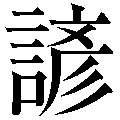
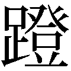
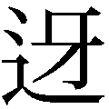

| ［新訳］菜根譚 | |
| 守屋 洋 | |
| (2017) | |

［新訳］菜根譚
先行き不透明の時代を生き抜く40歳からの処世術
守屋 洋
生きにくい時代である。
経済の低迷、失職者の増加、治安の悪化などなど、毎日のように心を暗くするニュースが流れてくる。いったいこの社会はどうなっていくのか、だれしも不安を禁じえない。
それだけではない、この社会を支えてきた規範までがぐらぐら揺れ動いている。なにを頼りにし、なにを心の拠り所にして生きていけばよいのか、不安はつのるばかりである。
しかも、先行きは不透明ときている。五年先、十年先どうなっていくのか、だれにもわからない。
こういう時代に生まれあわせて、どう生きていけばよいのか。
いまさら嘆いても始まらない。なによりも望まれるのは、周りの動きに惑わされないしっかりした自分を持つことである。肝心の自分がいつもぐらぐらしていたのではどうにもならない。まず少々のことには動じないように自分を磨いていく必要がある。その上で、少しは生きていくための知恵を身につけたい。
では、どうすれば自分を磨くことができるのか。また、どこから生きていくための知恵を学べばよいのか。
これらの問いにわかりやすく答えてくれるのが、『菜根譚』という古典である。ここには、生きにくい時代をたくましく、そして伸びやかに生きていくための知恵がさまざまな角度から説きあかされている。
そこで、『菜根譚』のなかから、昨今の厳しい時代を生きている皆さんのために、とくに参考になりそうな項目を精選し、私なりの解説をつけて紹介してみることにした。
これらを参考にして、自分の生き方を点検するとともに、混迷の時代を生きるためのしぶとい知恵を学びとっていただければ幸いである。
なお、このさい全文を読んでみたいと思われる方には、やはり拙訳の『決定版 菜根譚』（ＰＨＰ研究所）をおすすめしておく。
二〇一一年一月
守屋 洋
不思議な魅力をもった古典
『菜根譚』は、人生の書である。
こう言えば、青臭い書生論を連想されるかもしれないが、じつはそうではない。人生の円熟した境地、老獪きわまりない処世の道を説いているのが、『菜根譚』である。
私事になるが、初めて『菜根譚』を読んだのは、二十代の頃だった。そのときは、なるほどと思う面もないではなかったが、多くの点で納得がいかなかった。
それから十年すぎた三十代に、また手にしてみた。そのときは、反発はほとんど感じない。むしろ多くの点で、共感すらおぼえたものである。
さらに十年たった四十代、三たび読む機会があった。すると、どうだろう、思わず小膝をたたきたくなることばに、しばしばぶつかるではないか。
『菜根譚』は、不思議な魅力をもった古典である。
中国の古典のなかには、処世の道を説いた本がたくさんある。いや、中国の古典というのは、もともと「応対辞令の学」といわれるように、直接間接に、処世の道を説いたものが主流であった。『菜根譚』は、そのなかにあって、他の本にはない大きな特色をもっている。それは何かと言えば、儒仏道、すなわち儒教と仏教と道教の三つの教えを融合し、そのうえにたって処世の道を語っていることだ。中国には、むかしから、思想、道徳のうえで、儒教と道教という二つの大きな流れがあった。この二つは、互いに対立し互いに補完し合いながら、中国人の意識を支配してきた。この関係は、現代中国でも生き続けている。
儒教というのは、「修身、斉家、治国、平天下」、すなわち学問を修め、身を立てて国を治めることを説いたエリートの思想であり、「功名ヲ竹帛ニ垂ル」ことをすすめた「表」の道徳である。また、広く人たるの規範を示しているという点では、建て前の道徳と言ってもよい。
だが、表の道徳だけでは、世の中は息苦しい。そこで必要になるのが、それを補完する「裏」の道徳である。その役割をになってきたのが道教であり、その原型となる老荘思想だった。
儒教が競争場裡に功名を求める哲学だとすれば、道教はみずからの人生にのんびり自足する哲学だと言ってもよい。また、儒教が建て前の道徳だとすれば、道教は本音の道徳だと言ってよいかもしれない。
さらに、儒教がエリートの思想であるとすれば、道教は民衆の思想であったともいえる。しかし、エリートでも、公の場では建て前として儒教の規範に従うが、私生活の本音のところでは、むしろ道教の影響を強く受けてきた。
読む人の境遇に応じた教訓が得られる
儒教と道教は、このような関係を保ちながら、中国人の意識を支配してきた。だが、儒教にしても道教にしても、中国の古典は、いわゆる「応対辞令の学」であって、人々の心の問題にまではほとんど立ち入らない。中国人の関心は、一貫してきびしい現実をいかに生きるかにあって、悩める心の救済にはあまり関心を示さなかった。
その欠を補ったのが、インドから伝わった仏教であり、とくに、それをもとに中国で独自の展開を見せた禅である。禅は一時、在来の儒教や道教を圧倒する勢いで、中国社会に広まった。
『菜根譚』は、この三つの教えを融合したところに特徴があり、そこから独特の味わいがかもし出されている。
たとえば、悠々自適の心境を語りながら、必ずしも功名富貴を否定しない。また、きびしい現実を生きる処世の道を説きながら、心の救済にも多くのことばをついやしている。隠士の心境に共鳴しながら、実社会に立つエリートの心得を説くことも忘れない。
だから、『菜根譚』という本は、読む人の境遇によって、受け取り方がずいぶんとちがってくるのである。しかし、それぞれの境遇に応じて、必ずや得るところも多いはずである。きびしい現実の中で苦闘している人々は適切な助言を見出すであろうし、不遇な状態に苦しんでいる人々はなぐさめと励ましを受けるであろうし、心のいらいらに悩まされている人々は大いなる安らぎを与えられるであろう。読む人々の境遇に応じて、さまざまな読み方ができるところに、『菜根譚』のあやしげな魅力があると言ってよい。
『菜根譚』の成り立ち
『菜根譚』は、中国の古典のなかでは比較的新しい本である。明の万暦年間の末期に成ったと推定されているから、十七世紀の初めごろ、今から四百年ほど前に書かれたことになる。日本でいえば、豊臣から徳川に政権が移ろうとしていたころだ。
著者は、洪応明、字を自誠、号を還初道人と称したが、詳しい経歴などはよくわかっていない。若いころ、科挙の試験に合格して官界に身を投じたが、中途で官界を退き、もっぱら道教と仏教の研究にいそしんだとされる。『菜根譚』のほかに『仙仏奇蹤』四巻の著述があるが、これは、仙界、仏界の古典のなかから逸事や名言を抜き出して編集した本だという。
北京観光の目玉の一つに、「明の十三陵」がある。十三陵のなかでも、きまって案内されるのが定陵の地下宮殿だ。これが万暦の四十八年間、中国に君臨した明の十四代皇帝神宗（万暦帝）の陵墓である。
神宗は、「明の滅ぶは、実は神宗に滅ぶ」と称されたように、ずいぶんとでたらめな政治をしたらしい。まず、奢侈にふけって財政を傾け、それを補うためにあくなき苛斂誅求を事とし、ために人心の離反を招いている。第二に、朝廷では宦官の専横を許し、政治を混迷におとしいれた。混迷にいっそう輪をかけたのが、高級官僚の党派争いである。
皇帝も皇帝なら、官僚も官僚で、肝心の政治をそっちのけにして党派争いに明け暮れ、それでなくても衰退に傾いている王朝の足を引っぱった。その結果、「表」の道徳である儒教の権威はゆらぎ、官僚のなかには、道教や仏教に心の救いを求める者が多かったといわれる。
洪自誠が生きたのはこのような時代であった。儒仏道を融合したといわれる『菜根譚』には、混迷の時代相が色濃く影をおとしていたと言ってよい。
ちなみに、『菜根譚』という題名の由来であるが、宋代の汪信民のことばに、「人常ニ菜根ヲ咬ミエバ、則チ百事ナスベシ」とあるのに基づいている。
「菜根」とは粗末な食事のことで、そういう苦しい境遇に耐えた者だけが大事を成し遂げることができるという意を寓したものだという。また、「譚」は談と同じ意味である。『菜根譚』は、江戸時代に日本に伝わり、中国でよりも、むしろ日本で愛読されてきた。したがって戦前までかなりの版本や解説書が流布してきたが、読者に直接の関係がないので、それらについての解説は省略したい。
［新訳］菜根譚 ◆ 目次
装丁：一瀬錠二（Art of NOISE）
自分の生き方に自信が持てない
心はつねに揺れ動く
それでなくても現代は不安だらけ
恵まれているように思える人でも
一つや二つ不安のタネを抱えこんでいる
不安とどう向き合い
どう乗り越えていけばよいのか
心が澄みきっているときは、腹がへれば飯を食い、喉がかわけば水を飲むという質素な生活に甘んじていても、心身ともに健康を損なうことはない。
心に迷いのあるときは、いくら禅を論じ偈をとなえたところで、たんなる気ばらしにしかならない。
性天澄徹セバ、即チ饑エテ喰イ渇シテ飲ムモ、身心ヲ康済スルニアラザルハナシ。心地沈迷セバ、縦イ禅ヲ談ジ偈ヲ演ブルモ、総テコレ精魂ヲ播弄セン。
性天澄徹、即饑喰渇飲、無非康済身心。心地沈迷、縦談禅演偈、総是播弄精魂。
（後集・八四）
▼現代の私どもは、さまざまなストレスにさらされながら生活している。適度なストレスなら、かえって心が刺激されて気持にハリが出てくるが、長く重いストレスにかかると、やがて心が病み、体にも変調をきたしていく。心を健全にするためには、ストレスをためこまないで、適当に受け流す工夫が必要になるかもしれない。
あわただしいさなかにあっても、冷静にあたりを見回すだけの余裕があれば、ずいぶんと心のいらいらを解消することができる。
暇でひっそりとしているときにも、情熱を燃やして事にあたれば、またそこに捨てがたい魅力を見出すことができる。
熱鬧ノ中ニ一冷眼ヲ着クレバ、便チ許多ノ苦心思ヲ省ク。冷落ノ処ニ一熱心ヲ存スレバ、便チ許多ノ真趣味ヲ得。
熱鬧中着一冷眼、便省許多苦心思。冷落処存一熱心、便得許多真趣味。
（後集・五九）
▼心がいらいらするのは、実態が把握しきれていないことも原因の一つである。だから、冷静に実態を見きわめれば、それなりの対策を講じることができて、心の不安を解消することができるかもしれない。ただし、ここぞというときには、情熱を燃やしてチャレンジする積極性がほしいのだという。
まず自分の心に打ち勝とう。そうすれば、あらゆる煩悩を退散させることができる。
まず自分の気持を平静にしよう。そうすれば、あらゆる誘惑から身を守ることができる。
魔ヲ降サントスル者ハ、先ズ自ラノ心ヲ降セ。心伏スレバ則チ群魔ハ退キ聴ク。横ヲ馭セントスル者ハ、先ズコノ気ヲ馭セ。気平ラカナレバ則チ外横侵サズ。
降魔者、先降自心。心伏則群魔退聴。馭横者、先馭此気。気平則外横不侵。
（前集・三八）
▼人に勝つのはやさしいが、自分に勝つのはむずかしいとされる。明代の思想家王陽明も、「山中ノ賊ヲ破ルハ易ク、心中ノ賊ヲ破ルハ難シ」と喝破しているように、自分の心に勝つといっても容易なことではないのである。
自分に勝つことのできる人こそ真の強者なのかもしれない。要は、そのための努力を怠ってはならない、ということであろうか。
幸福も不幸も、すべて心の持ち方から生まれてくる。釈迦も、「欲望が燃えさかれば、この世は焦熱地獄。貪欲におちこめば、人生は苦しみの海。心さえ清らかになれば、燃えさかる炎も涼しげな池となり、迷いからさめさえすれば、解脱の境地に達する」と語っている。心の持ち方を少し変えただけで、この世のなかはがらりと姿を変える。くれぐれも慎重に対処したい。
人生ノ福境禍区ハ、皆念想ヨリ造成ス。故ニ釈氏云ウ、「利欲熾然ナレバ、則チコレ火坑。貪愛ニ沈スレバ、便チ苦海トナル。一念清浄ナレバ、烈モ池ト成リ、一念警覚スレバ、船彼岸ニ登ル」。念頭稍異ナレバ、境界頓ニ殊ナル。慎マザルベケンヤ。
人生福境禍区、皆念想造成。故釈氏云、利欲熾然、即是火坑。貪愛沈、便為苦海。一念清浄、烈成池、一念警覚、船登彼岸。念頭稍異、境界頓殊。可不慎哉。
（後集・一〇九）
▼『碧巌録』にも、「誰ガ家ニカ明月清風ナカラン」とある。それを感得できるかどうかは、その人の心にかかっている。
時間は、気持の持ち方しだいで長くもなり短くもなり、場所は、心の持ち方ひとつで広くもなり狭くもなる。
のんびりした気持の持主には一日が千年の長さに感じられ、ゆったりした心の持主には狭苦しい部屋も天地の広さに感じられる。
延促ハ一念ニ由リ、寛窄ハコレヲ寸心ニ係ク。故ニ機ナル者ハ、一日モ千古ヨリ遥カニ、意広キ者ハ、斗室モ寛クシテ両間ノ若シ。
延促由於一念、寛窄係之寸心。故機者、一日遥於千古、意広者、斗室寛若両間。
（後集・一九）
▼仕事に追われてあたふたしていると、あっというまに時間が過ぎて行く。これはだれしも実感するところであろう。しかし、現役を退いてのんびりした時間が持てるようになっても、時は足早に過ぎ去って行く。知らず知らず世の中のあわただしい動きに影響されているのかもしれない。せめて第一線を退いたときくらいは、ゆったりした気持で残りの人生を過ごしたいものである。
自然の暑さからのがれることはできなくても、暑さを苦にする心を消し去れば、いつも涼み台の上にいるようなものだ。
現実の貧しさから抜け出ることはできなくても、貧乏に悩む心を払いのければ、いつも安楽な家に住んでいるようなものだ。
熱ハ必ズシモ除カズ、而シテコノ熱悩ヲ除カバ、身ハ常ニ清涼台上ニ在ラン。窮ハ遣ルベカラズ、而シテコノ窮愁ヲ遣ラバ、心ハ常ニ安楽窩中ニ居ラン。
熱不必除、而除此熱悩、身常在清涼台上。窮不可遣、而遣此窮愁、心常居安楽窩中。
（後集・二八）
▼「心頭ヲ滅却スレバ、火自ラ涼シ」（『碧巌録』）ということであろうか。貧乏も楽しめる境地になれば最高なのだが、なかなかそこまではなれそうもない。せめて経済的には恵まれなくても、明るく前向きに生きていきたい。
心が澄みきっていれば、どんな暗がりにいても、良心をくらまされることはない。
心が曇っていれば、どんな明るみにいても、悪魔のとりこになる。
心体光明ナレバ、暗室ノ中ニモ青天アリ。念頭暗昧ナレバ、白日ノ下ニ鬼生ズ。
心体光明、暗室中有青天。念頭暗昧、白日下生鬼。
（前集・六五）
▼心が曇らされるのは、もろもろの欲望のせいである。ただし、欲望がすべて悪いわけではない。なかには、人を活かし自分を活かす欲望だってあるのである。困るのは周りの人々に迷惑を及ぼす欲望であって、これはいずれブーメランのように自分に跳ね返ってくる。
いずれにしても人間から欲望をなくすことはできないし、またその必要もない。問題はどうやってコントロールするかである。自分の意志で抑え込むことができれば、それでよしとしたい。修養や修行は、そのための方法なのである。
冷静な眼で人間を観察し、冷静な耳でことばを判断する。冷静な感情で事に触れ、冷静な心理で道理を考える。
冷眼モテ人ヲ観、冷耳モテ語ヲ聴キ、冷情モテ感ニ当タリ、冷心モテ理ヲ思ウ。
冷眼観人、冷耳聴語、冷情当感、冷心思理。
（前集・二〇六）
▼「つねに冷静であれ」というのである。冷静さを妨げるのは感情であるが、これが先行すると、結果はきまってよくない。あの『孫子』の兵法も、「主ハ怒リヲ以ッテ師ヲ興スベカラズ。将ハ慍リヲ以ッテ戦イヲ致スベカラズ」と戒めている。これはなにも武器をとった戦いだけではなく、日常の生活や仕事にさいしてもあてはまるであろう。
冷静であるためには、感情をいかにコントロールするかにかかっているのだが、抑えすぎると、こんどは冷たいとかとっつきにくいといった印象を与えることになる。それを避けるためには同時に、心の温かさが必要になることは言うまでもない。
心から雑念を追いはらえば、本来の自分の姿が見えてくる。雑念をいっぱいつめこんだままで、自分の姿を見ようとしても、不可能だ。それはちょうど、波をかきわけて、水に映った月をとろうとするようなものである。意識をすっきりさせれば、心も澄む。意識を濁ったままにしておいて、心だけ澄んだ状態にしようとしても、不可能だ。それはちょうど、鏡の曇りをそのままにして、物を映し出そうとするようなものである。
心虚ナレバ則チ性現ワル。心ヲ息メズシテ性ヲ見ンコトヲ求ムルハ、波ヲ撥イテ月ヲ覓ムルガ如シ。意浄ケレバ則チ心清シ。意ヲ了セズシテ心ヲ明ラカニセンコトヲ求ムルハ、鏡ヲ索メテ塵ヲ増スガ如シ。
心虚則性現。不息心而求見性、如撥波覓月。意浄則心清。不了意而求明心、如索鏡増塵。
（前集・一七一）
▼『老子』に、「虚ヲ致スコト極マレバ、静ヲ守ルコト篤シ」とある。「虚」とは、心のなかから、雑念、我執など、いっさいの自意識をとり除いた状態をいう。
ひっそりと静まりかえった深夜に、独り坐って自分を観照すれば、もろもろの煩悩が消え去って清浄な心があらわれてくる。そこから、必ずや大いなる悟りを開くことができよう。
清浄な心があらわれても、なお煩悩から逃れきれないと悟ったときは、必ずやそこから大いなる懺悔の心が芽生えてくるにちがいない。
夜深ク人静マレルトキ、独リ坐シテ心ヲ観ズレバ、始メテ妄窮マリテ真独リ露ワルルヲ覚ユ。毎ニコノ中ニ於イテ、大機趣ヲ得。スデニ真現ワレテ妄ノ逃レ難キヲ覚ユレバ、マタコノ中ニ於イテ、大慚忸ヲ得。
夜深人静、独坐観心、始覚妄窮而真独露。毎於此中、得大機趣。既覚真現而妄難逃、又於此中、得大慚忸。
（前集・九）
▼現代はいろいろな事件や騒ぎが次々に起こってくる。よほどしっかりと自分を持たないと、あわただしさに流されて自分を見失ってしまう。時には自分独りだけの時間を持って、来し方行く末に思いを致してみたい。
わが身を、いつもあくせくする必要のない状態に置いておけば、世間の思惑がどうあろうと、いささかも動揺させられることはない。
わが心を、いつも静かな境地に落ち着かせておけば、世間の評価がどうあろうと、それによって少しもかき乱されることはない。
コノ身、常ニ処ニ放在セバ、栄辱得失モ、誰カヨク我ヲ差遣セン。コノ心、常ニ静中ニ安在セバ、是非利害モ、誰カヨク我ヲ瞞昧セン。
此身常放在処、栄辱得失、誰能差遣我。此心常安在静中、是非利害、誰能瞞昧我。
（後集・四二）
▼静かな環境、静かな境地で自分と向き合う時間が持てるなら、この騒がしい時代にあっても、自分のペースで悠々と生きていくことができるのだという。仕事に追われてあわただしい日々を送っている人ほど、そんなひとときを持てるなら、仕事の上でも新しい展望が開けてくるかもしれない。
世俗を逃れて山林に住む者には、栄誉も恥辱も関係ない。道義を守ってつき進む者には、人の思惑など気にならない。
隠逸ノ林中ニハ栄辱ナク、道義ノ路上ニハ炎涼ナシ。
隠逸林中無栄辱、道義路上無炎涼。
（後集・二七）
▼「隠逸」とは、世俗とは別の世界に住んでいる人々を指している。だから、世俗の重視する栄誉や恥辱にとらわれないのである。同じように、道義を守ってつき進む者が世間の思惑にとらわれないのは、道義という価値基準をしっかり持っているからである。自分の世界を持ち、自分の価値観を守っている者は、周りがどうあろうと、心を動かされないということだろう。
逆に言えば、周りの思惑に振り回されたくないと願うなら、自分の世界、自分の価値観を持てということになるかもしれない。
財産や地位を浮雲のようにみなす心構えがあれば、それで十分だ。必ずしも深山幽谷に居を構える必要はない。
酒を愛で詩を解する風流心があれば、それでよい。肝心の仕事を投げ出してまで風流にのめりこむ必要はないのである。
富貴ヲ浮雲ニスルノ風アリテ、而モ必ズシモ岩棲穴処セズ。泉石ニ膏肓スルノ癖ナクシテ、而モ常ニ自ラ酒ニ酔イ詩ニ耽ル。
有浮雲富貴之風、而不必岩棲穴処。無膏肓泉石之癖、而常自酔酒耽詩。
（後集・一七）
▼普通の人にとっては、まず生活があり仕事がある。これを軽視することは許されない。ただし、俗の世界にどっぷりつかっていると、俗事に振り回されて、心の安らぎは得られない。そこである程度距離をおきたいのだが、離れすぎると、こんどは生活や仕事に差し障りが出てくる。
不即不離といきたい。
眼の前にあるすべてのことは、満足することを知っている者には理想の世界であるが、満足することを知らない者にとっては世俗の世界にすぎない。
世の中を動かしているすべての活力は、うまく引き出せば社会を発展させるが、使い方を誤まるとかえってガタガタにしてしまう。
都テ眼前ニ来タル事ハ、足ルヲ知ル者ニハ仙境、足ルヲ知ラザル者ニハ凡境ナリ。総テ世上ニ出ヅルノ因ハ、善ク用ウル者ニハ生機、善ク用イザル者ニハ殺機ナリ。
都来眼前事、知足者仙境、不知足者凡境。総出世上因、善用者生機、不善用者殺機。
（後集・二一）
▼『老子』にも、「禍ハ足ルヲ知ラザルヨリ大ナルハナク、咎ハ得ルヲ欲スルヨリ大ナルハナシ。故ニ足ルヲ知ルノ足ルハ常ニ足ル」とある。足るを知るとは、何かを手に入れてそれに満足することではなく、あるがままの現実につねに満足することだという。
忙しいときに、あわてふためきたくないと思うなら、暇なときに、しっかりと精神を鍛えておかなければならない。
死ぬ間ぎわになって、とり乱したくないと思うなら、ふだんから、しっかりと物事の道理を見きわめておかなければならない。
忙処ニ性ヲ乱サザラントセバ、須ラク処ニ心神ヲ養イ得テ清カルベシ。死時ニ心ヲ動カサザラントセバ、須ラク生時ニ事物ヲ看得テ破ルベシ。
忙処不乱性、須処心神養得清。死時不動心、須生時事物看得破。
（後集・二六）
▼ふだんから自分を磨いておけば、いざというときにあわてなくてすむ。「備エアレバ憂イナシ」（『左伝』）ともいうではないか。心の持ち方についても同じであろう。つねに最悪の事態に対処する心構えを忘れてはならない。また、物事の道理とは、たとえば「生あれば死あり」ということであろうか。これを悟れば、とり乱すこともないかもしれない。
人と争ってわれ先に進もうとすれば、道はいよいよ狭くなる。一歩譲って後にさがれば、それだけ道は広くなる。
どんなにおいしい料理でも、こってりしすぎた味は、すぐに飽きがくる。少しでもあっさりした味にすれば、それだけ長く楽しめる。
先ヲ争ウノ径路ハ窄シ。退キ後ルルコト一歩ナレバ、自ラ一歩ヲ寛平ニス。濃艶ノ滋味ハ短シ。清淡ナルコト一分ナレバ、自ラ一分ヲ悠長ニス。
争先的径路窄。退後一歩、自寛平一歩。濃艶的滋味短。清淡一分、自悠長一分。
（後集・二五）
▼こってりした味はすぐ飽きがくる、これはだれでも経験しているところである。では、人と争えばなぜ行き詰まるのか。他でもない、人を蹴落として進むと、脱落していった人々の怨みを買う。それを考えると、心の休まるときがない。その結果、外から足をすくわれるか、内から崩れるかして、いずれ自滅を免れないのである。
前に進むときには、必ず後に退がることを考えよ。そうすれば、垣根に角を突っ込んだ羊のように、身動きがとれなくなる恐れはない。
手を着けるときには、まず手を引くことを考えよ。そうすれば、虎の背に乗ったときのように、やみくもに突っ走る危険を避けることができる。
歩ヲ進ムル処、便チ歩ヲ退クヲ思ワバ、庶ワクハ藩ニ触ルルノ禍ヲ免レン。手ヲ着クル時、先ズ手ヲ放ツヲ図ラバ、纔ニ虎ニ騎ルノ危ウキヲ脱レン。
進歩処、便思退歩、庶免触藩之禍。着手時、先図放手、纔脱騎虎之危。
（後集・二九）
▼進むことだけを知って退くことを知らない勇気を「匹夫の勇」という。同じ勇気でもこういう勇気は持ってもらっては困るのだという。情勢不利だと見たら、ひとまず撤退して戦力を温存する。情勢はつねに変化しているから、チャンスは必ずまたくる。そのチャンスをとらえて巻き返しをはかる。こんな戦い方ができれば、生き残る可能性もずいぶん高くなるにちがいない。
鳥の囀り、虫の声は真理を伝える無言の教え。花の色、草の緑もみな真理を語る文字なき文章だ。
それを会得したかったら、心を澄まし気持を集中して、見るもの聞くもの、すべてのものから真理を学びとらなければならない。
鳥語虫声モ、総テコレ伝心ノ訣ナリ。花英草色モ、見道ノ文ニアラザルハナシ。学ブ者ハ、天機清徹、胸次玲瓏ニシテ、物ニ触レテ皆会心ノ処アランコトヲ要ス。
鳥語虫声、総是伝心之訣。花英草色、無非見道之文。学者要天機清徹、胸次玲瓏、触物皆有会心処。
（後集・七）
▼文明社会の便利さを否定する者はいない。しかし、そのなかに身を置いていると、身も心もすり減っていく。
時には自然のなかに溶け込んでそのたたずまいに触れることができるなら、心の安らぎをおぼえるとともに、なにか貴重な教えを汲み取ることもできるであろう。
日本はすばらしい自然に恵まれている。これを活かさない手はない。
楽しいことがあったかと思えば、すぐにまた心配のタネがもちあがってくる。うまくいったかと思えば、すぐまた壁にぶつかって嬉しさも相殺されてしまう。
ありふれた食事、平凡な生活。そのなかにこそ人生のほんとうの楽しみがあるのだ。
一ノ楽境界アレバ、就チ一ノ不楽ノ相対待スルアリ。一ノ好光景アレバ、就チ一ノ不好ノ相乗除スルアリ。タダコレ尋常ノ家飯、素位ノ風光、纔ニコレ個ノ安楽ノ窩巣ナリ。
有一楽境界、就有一不楽的相対待。有一好光景、就有一不好的相乗除。只是尋常家飯、素位風光、纔是個安楽的窩巣。
（後集・六〇）
▼平穏な生活にはそれなりのよさがあることは認めるにしても、一面、なんとなく物足りない感がしないでもない。一方、波乱の人生はたしかに苦労も多いが、それだけに面白いし、生きるに値するとも言えるのではないか。
どちらをよしとするかは、その人次第ということになる。
滅亡して廃墟と化した西晋の都は、茨がぼうぼうと生い茂っている。それを目のあたりにしながら、それでも人々は戦いをやめようとしない。やがて死ねば北 の墓地に葬られて、狐や莵の食となる運命にある。それを知りながら、それでも人々は利益にこだわり続ける。
の墓地に葬られて、狐や莵の食となる運命にある。それを知りながら、それでも人々は利益にこだわり続ける。
古語にも、「どんな猛獣でも飼いならせるが、人の心だけは始末におえない。どんな深い谷間でも埋めつくせるが、人の心だけは満たせない」とあるが、まったくそのとおりである。
眼ニ西晋ノ荊榛ヲ看テ、ナオ白刃ヲ矜ル。身ハ北ノ狐莵ニ属シテ、ナオ黄金ヲ惜シム。語ニ云ウ、「猛獣ハ伏シ易ク、人心ハ降シ難シ。谿壑ハ満タシ易ク、人心ハ満タシ難シ」ト。信ナルカナ。
眼看西晋之荊榛、猶矜白刃。身属北之狐莵、尚惜黄金。語云、猛獣易伏、人心難降。谿壑易満、人心難満。信哉。
（後集・六五）
▼これが人間なのだと言えばそれまでであるが、人間は性懲りもなく同じことを繰り返してきたし、これからも繰り返していくにちがいない。
役者は、紅おしろいをぬりたくり、刷毛の先で美人や醜婦になりすます。だが、芝居がはねてしまえば、もはや美人も醜婦もない。
碁打ちは、先手後手を争い、一手一手にしのぎをけずる。だが、ケリがついてしまえば、さきほどの熱気はどこにもない。
優人、粉ヲ傅ケヲ調エ、醜ヲ毫端ニ効スモ、俄ニシテ歌残リ場罷メバ、醜何ゾ存セン。者、先ヲ争イ後ヲ競イ、雌雄ヲ着子ニ較ブルモ、俄ニシテ局尽キ子収ムレバ、雌雄安ニカ在ラン。
優人傅粉調、効醜於毫端、俄而歌残場罷、醜何存。者争先競後、較雌雄於着子、俄而局尽子収、雌雄安在。
（後集・一〇〇）
▼実質に目を向けよ、表面にとらわれるな、一時の現象に惑わされるな、というのである。ただしそのためにはよほどの心眼を必要とするかもしれない。
草木が枯れ出すころ、根もとにはすでに新しい芽生えが始まっている。凍てつく寒さが来れば、陽気の訪れも遠くない。
ものみな枯れはてたなかにも、つねに生き生きとした生命が宿っている。これこそが自然の心にほかならない。
草木纔ニ零落スレバ、便チ萌穎ヲ根底ニ露ワス。時序凝寒トイエドモ、終ニ陽気ヲ飛灰ニ回ス。粛殺ノ中ニ、生々ノ意、常ニコレガ主トナル。即チコレ以ッテ天地ノ心ヲ見ルベシ。
草木纔零落、便露萌穎於根底。時序雖凝寒、終回陽気於飛灰。粛殺之中、生生之意、常為之主。即是可以見天地之心。
（後集・一一二）
▼耳をすまし、目を見開いて見れば、どん底に落ちたときにこそ、新しいものの胎動が感じとられる。これが自然の摂理なのだという。人間の世界もしかりである。希望を捨てないで生きていきたい。
人間には悩みが付きものだとはいえ
ああでもない、こうでもないと思い悩み
夜も眠れない
いつまでもそんな悩みを引きずっていると
気持はいよいよ落ち込んでいく
悩める自分を吹っ切って
気持を前向きに切り換えたい
書物を読んで聖賢の教えに親しむには、まず気持を清浄にしてかからなければならない。
さもないと、せっかく先人の立派な行動やことばにふれても、私利を追求する参考にしたり、欠点をとりつくろう口実にしたりするのが落ちだ。
これでは、敵に武器を貸し、盗人に食糧を与えるのと、少しも変わりがない。
心地乾浄ニシテ、方メテ書ヲ読ミ古ヲ学ブベシ。然ラザレバ、一ノ善行ヲ見テハ、窃ミテ以ッテ私ヲ済シ、一ノ善言ヲ聞キテハ、仮リテ以ッテ短ヲ覆ウ。コレマタ寇ニ兵ヲ藉シ、盗ニ粮ヲ齎スナリ。
心地乾浄、方可読書学古。不然、見一善行窃以済私、聞一善言仮以覆短。是又藉寇兵、而齎盗粮矣。
（前集・五四）
▼つまらない本をいくら読んでも、得るものは少ない。読むならやはり古典や歴史の本ということになる。定評のあるものを選んで、じっくり取り組みたい。ただし、学んだことをどう活かすか、それが問題なのだという。
書物を読むなら、小躍りしたくなるまで読め。そうすれば、真髄にふれることができる。
物事を観察するなら、対象と一体になるまで観よ。そうすれば、本質に迫ることができる。
善ク書ヲ読ム者ハ、手ノ舞イ足ノ蹈ム処ニ読ミ到ランコトヲ要シテ、方メテ筌蹄ニ落チズ。善ク物ヲ観ル者ハ、心融ケ神洽ラグノ時ニ観到ランコトヲ要シテ、方メテ迹象ニ泥マズ。
善読書者、要読到手舞足蹈処、方不落筌蹄。善観物者、要観到心融神洽時、方不泥迹象。
（前集・二一七）
▼真髄にふれ本質に迫ることができれば、人生に新しい視界を開くことができるかもしれない。ただし現代では、本はあふれているけれども、小躍りしたくなる本に出会うことはめったにないし、あわただしく過ぎていく時の流れのなかで、とかく心が浮わついて、じっくりと対象に迫る余裕も失われがちだ。
これもまた自覚的な努力に待つほかはないのかもしれない。
書物を読んでも、聖賢の心にふれなければ、文字の奴隷にすぎない。
官吏となっても、民衆をいつくしまなければ、禄盗人にすぎない。
学問を教えても、みずから実行しなければ、口先だけの学問にすぎない。
事業をおこしても、人々のためを考えなければ、つかの間のあだ花におわってしまう。
書ヲ読ミテ聖賢ヲ見ザレバ、鉛槧ノ傭トナル。官ニ居リテ子民ヲ愛セザレバ、衣冠ノ盗トナル。学ヲ講ジテ躬行ヲ尚バザレバ、口頭ノ禅トナル。業ヲ立テテ徳ヲ種ウルヲ思ワザレバ、眼前ノ花トナル。
読書不見聖賢、為鉛槧傭。居官不愛子民、為衣冠盗。講学不尚躬行、為口頭禅。立業不思種徳、為眼前花。
（前集・五六）
▼何をするにしても、「なんのために」という目的を忘れてしまったのでは、迷走する恐れがある。折にふれてこの原点を確認してかかりたい。
ころりと態度を変えるのは、貧乏人より金持のほうが激しい。ねたみそねみは、他人より肉親同士のほうが深い。
こんなとき、冷静、かつ穏やかな気持で対処しなければ、毎日を悩みと苦しみのなかで過ごさなければならない。
炎涼ノ態ハ、富貴更ニ貧賤ヨリモ甚シク、妬忌ノ心ハ、骨肉尤モ外人ヨリモ很シ。コノ処、若シ当タルニ冷腸ヲ以ッテシ、御スルニ平気ヲ以ッテセザレバ、日ニ煩悩障中ニ坐セザルコト鮮カラン。
炎涼之態、富貴更甚於貧賤、妬忌之心、骨肉尤很於外人。此処、若不当以冷腸、御以平気、鮮不日坐煩悩障中矣。
（前集・一三五）
▼骨肉の争いは、むしろ現代のほうが深刻である。いずれにしても感情を激発させると、結果はきまってよくない。「冷静、かつ穏やかに」、これはどのような事態においても、また、どんな相手に対しても、こうありたい心構えである。
手におえない暴れ馬も、馴らし方ひとつで乗りこなせる。鋳型からとびはねた金も、いずれは型におさまる。人間も、やる気のある人間はまだいい。始末がわるいのは、のらくらしてやる気のない連中だ。こんな手合はいつまでたっても進歩が望めない。
白沙先生も語っている。「人間として欠点が多いのは恥ずべきことではない。むしろ欠点のない人間のほうが案じられる」と。これこそ達見だと思う。
泛駕ノ馬モ駆馳ニ就クベシ。躍冶ノ金モ終ニ型範ニ帰ス。タダ一ニ優游シテ振ルワザルハ、便チ終身個ノ進歩ナシ。白沙云ウ、「人ト為リ多病ナルハイマダ羞ズルニ足ラズ。一生病ナキハコレ吾ガ憂イナリ」。真ニ確論ナリ。
泛駕之馬、可就駆馳。躍冶之金、終帰型範。只一優游不振、便終身無個進歩。白沙云、為人多病未足羞。一生無病是吾憂。真確論也。
（前集・七七）
▼孔子も、「一日中食べることばかり考えて頭を使おうとしない連中は、どうしようもない」（『論語』）と語っている。なんでもいいから、やる気を出してチャレンジしたい。
心を雑念で満たしてはならない。雑念がつまっていなければ、そこに道理がはいってくる。
心はいつも充実させておかなければならない。充実させておけば、物欲のはいりこむ余地がなくなる。
心ハ虚ナラザルベカラズ。虚ナレバ則チ義理来タリ居ル。心ハ実ナラザルベカラズ。実ナレバ則チ物欲入ラズ。
心不可不虚。虚則義理来居。心不可不実。実則物欲不入。 （前集・七五）
▼雑念がつまっていると、ああでもない、こうでもないと迷いばかり深くなり、判断を誤ることになる。道理が居すわっていれば、迷うこともないし、判断を誤ることもない。
また、心の充実とは、やらんかなの意欲を燃やし、目標に向かって集中することである。これなら他のことに心を奪われる心配はない。
何事かを成し遂げようとするなら、なによりもまず心を充実させて取り組むことが望まれるのである。
満腹したあとで味のことを考えても、もはや、うまいかまずいかの識別すらつかなくなっている。房事のあとで男女の交わりを思っても、もはや、そんな欲情はどこかに消しとんでいる。
いつも事後の悔恨に思いを致して、事前の迷いに対処すれば、それなりに腹もすわって、誤りのない行動をとることができよう。
飽後ニ味ヲ思ワバ、則チ濃淡ノ境モ都テ消エ、色後ニ婬ヲ思ワバ、則チ男女ノ見モ尽ク絶ユ。故ニ人常ニ事後ノ悔悟ヲ以ッテ、事ニ臨ムノ痴迷ヲ破ラバ、則チ性定マリテ動クコト正シカラザルハナシ。
飽後思味、則濃淡之境都消、色後思婬、則男女之見尽絶。故人常以事後之悔悟、破臨事之痴迷、則性定而動無不正。
（前集・二六）
▼われらの人生、あとで「しまった」と悔いることのなんと多いことか。これを少なくすれば、毎日をもっと安らかに暮らすことができるにちがいない。
「竹の影が縁先をはらうが、塵はそのまま。月の光が沼の底までさしこむが、水は跡をとどめない」と、昔の高僧が語っている。「水が激しく流れ落ちても心は静か。花がしきりに舞い落ちても心はのどか」と、わが国の儒者も語っている。
こんな気持であらゆることに対処すれば、思いわずらうことは何もない。
古徳云ウ、「竹影、階ヲ掃ウモ塵動カズ。月輪、沼ヲ穿ツモ水ニ痕ナシ」。吾ガ儒云ウ、「水流、急ニ任セテ境常ニ静カナリ。花落ツルコト頻ナリトイエドモ意自ラナリ」。人常ニコノ意ヲ持シテ、以ッテ事ニ応ジ物ニ接スレバ、身心、何等ノ自在ゾ。
古徳云、竹影掃階塵不動。月輪穿沼水無痕。吾儒云、水流任急境常静。花落雖頻意自。人常持此意、以応事接物、身心何等自在。
（後集・六三）
▼とらわれず、虚心であれというのだ。これなら、どんな事態にも柔軟に対応することができるかもしれない。
人間の心には、もともとすばらしい文章が刻まれ、妙なる音楽がかなでられている。
ところが、せっかくの文章も知識のガラクタによって封じこめられ、せっかくの音楽もあやしげな音曲によってかき消されている。
自分を向上させようと思う者は、いっさいの誘惑を退け、自分のなかにある本来の文章、本来の音楽を求めて、その活用をはからなければならない。
人ノ心ニハ一部ノ真ノ文章アレドモ、都テ残編断簡ニ封錮シ了ラル。一部ノ真ノ鼓吹アレドモ、都テ妖歌艶舞ニ湮没シ了ラル。学ブ者ハ須ラク外物ヲ掃除シ、直チニ本来ヲ覓ムベク、纔ニ個ノ真ノ受用アラン。
人心有一部真文章、都被残編断簡封錮了。有一部真鼓吹、都被妖歌艶舞湮没了。学者須掃除外物、直覓本来、纔有個真受用。
（前集・五七）
▼人間はだれでも天から立派な素質を与えられて生まれてくる。その天分を発揮する場がこの人生だと心得たい。
心に波風さえ立てなければ、どこにいようと、青い山、緑の木々にかこまれたような、すがすがしい心境になれる。
心に万物をはぐくむ温かさがあれば、どこに行こうと、魚がはね鳶が舞うのを見るような、のびやかな心境になれる。
心地ノ上ニ風濤ナケレバ、在ルニ随イテ、皆青山緑樹ナリ。性天ノ中ニ化育アレバ、処ニ触レテ、魚躍リ鳶飛ブヲ見ル。
心地上無風濤、随在皆青山緑樹。性天中有化育、触処見魚躍鳶飛。
（後集・六六）
▼心の持ち方ひとつで周りの風景も違って見えてくるが、なによりも自分を変えられることが大きいのかもしれない。
すがすがしい心境になることができるなら、いつも新しい気持で仕事に取り組むことができるし、のびやかな心境になることができるなら、屈託なく仕事に集中できて、おのずから成果もあがるはずである。
道を会得しようとするなら、まずきびしく姿勢を正す必要があるが、しかし一面では、ものごとにこだわらない洒脱な味わいも必要である。
ひたすらわが身を苦しめるだけのことなら、秋の冷たさはあっても春の暖かさに欠けている。どうして万物をはぐくむことができようか。
学ブ者ハ段ノ兢業ノ心思アリ、マタ段ノ瀟洒ノ趣味アルヲ要ス。若シ一味ニ斂束清苦ナラバ、コレ秋殺アリテ春生ナキナリ。何ヲ以ッテカ万物ヲ発育セン。
学者有段兢業的心思、又要有段瀟洒的趣味。若一味斂束清苦、是有秋殺無春生。何以発育万物。
（前集・六一）
▼きびしく自分を反省することは必要だが、あまりにも深刻に思いつめると、かえって自分を袋小路に追い込んでしまう。
時には、「なるようになるさ」と達観する一面があってもよい。そういう心の余裕があってこそ、自分を活かし、人も活かすことができるのである。
道徳は、万人共有のもの、誰もが踏み行なうべき道である。すべての人に開放されていなければならない。
学問は、三度の食事と同じようなもの、誰にとっても欠かすことができない。たゆまずに研鑽しよう。
道ハコレ一重ノ公衆ノ物事ナリ。マサニ人ニ随イテ接引スベシ。学ハコレ一個ノ尋常ノ家飯ナリ。マサニ事ニ随イテ警スベシ。
道是一重公衆物事。当随人而接引。学是一個尋常家飯。当随事而警。
（前集・一六一）
▼倫理道徳を踏みはずしたのでは、周りの非難を浴びる。また、学ぶことを怠ったのでは、自分を向上させることはできない。これではまともな社会人とは見なされないのである。
孔子も、「学ビテ時ニコレヲ習ウ、マタ説バシカラズヤ」（『論語』）と、学ぶことの楽しみを語っている。
思いどおりにならないときは、自分より条件の悪い人のことを考えよ。そうすれば、自然に不満が消えるだろう。
怠け心が生じたときは、自分よりすぐれた人物のことを考えよ。そうすれば、またやる気が湧いてくるだろう。
事ヤヤ払逆セバ、便チ我ニ如カザルノ人ヲ思エ。則チ怨自 ラ消エン。心ヤヤ怠荒セバ、便チ我ヨリ勝レルノ人ヲ思エ。則チ精神自ラ奮ワン。
事稍払逆、便思不如我的人。則怨尤自消。心稍怠荒、便思勝似我的人。則精神自奮。
（前集・二一五）
▼とかく人の境遇をうらやみたくなるのが人情の自然である。だが、これでは、どこまで行ってもきりがない。同じように他人と比較するなら、ここで洪自誠の言っているほうが、はるかに前向きではないか。
家族の者が過ちを犯したとき、声を荒らげてどなりつけてもいけないし、黙って見て見ぬふりをしているのもよくない。他のことにかこつけてそれとなく戒めるのがよい。それで効果がないときは、時間をおいて、別の機会にまた注意を促すことだ。
要は、春風が氷をとかすようにおだやかな態度で臨む、これが家庭の和を保つ秘訣である。
家人、過チアラバ、ヨロシク暴怒スベカラズ、ヨロシク軽棄スベカラズ。コノ事言イ難クバ、他ノ事ヲ借リテ隠ニコレヲ諷セヨ。今日悟ラザレバ、来日ヲ俟チテ再ビコレヲ警メヨ。春風ノ凍レルヲ解クガ如ク、和気ノ氷ヲ消スガ如クニシテ、纔ニコレ家庭ノ型範ナリ。
家人有過、不宜暴怒、不宜軽棄。此事難言、借他事隠諷之。今日不悟、俟来日再警之。如春風解凍、如和気消氷、纔是家庭的型範。
（前集・九六）
▼親が子に対する場合、過度の干渉もよろしくないが、むしろ現代の通弊は、子供の過ちに気づいても見て見ぬふりをすることである。これでは親としての責任が果たせない。
見通しの立たない計画に頭を悩ますよりも、すでに軌道に乗った事業の発展をはかるがよい。
過去の失敗にくよくよするよりも、将来の失敗に備えるがよい。
イマダ就ラザルノ功ヲ図ルハ、已ニ成ルノ業ヲ保ツニ如カズ。既往ノ失ヲ悔ユルハ、将来ノ非ヲ防グニ如カズ。
図未就之功、不如保已成之業。悔既往之失、不如防将来之非。
（前集・八〇）
▼「前事忘レザルハ後事ノ師」（『戦国策』）という有名な格言がある。前の失敗を教訓として同じ失敗を繰り返さないようにせよという意味だ。
ここで洪自誠が言わんとしているのも、これに近い。たんにくよくよするよりも、同じ失敗を繰り返さないための教訓として生かすことが大事なのである。
また、前段のくだりであるが、あれにもこれにもと知恵や資金を分散するよりも、今まで手がけてきた仕事に集中させるほうが成功の近道なのだという。これも一つの見識と言ってよい。
天地は永遠であるが、人生は二度ともどらない。人の寿命はせいぜい百年、あっというまに過ぎ去ってしまう。幸いこの世に生まれたからには、楽しく生きたいと願うばかりでなく、ムダに過ごすことへの恐れをもたなければならない。
天地ニ万古アルモ、コノ身再ビ得ズ。人生タダ百年、コノ日最モ過ギ易シ。幸イソノ間ニ生マルル者ハ、有生ノ楽シミヲ知ラザルベカラズ、マタ虚生ノ憂イヲ懐カザルベカラズ。
天地有万古、此身不再得。人生只百年、此日最易過。幸生其間者、不可不知有生之楽、亦不可不懐虚生之憂。
（前集・一〇七）
▼人生は短い。古来から人々はそれを嘆いてきた。たとえば「人生ハ朝露ノ如シ」（『漢書』）だという。
洪自誠はここで、楽しむことをすすめながら、同時に、ムダに過ごすことを戒めている。適切な助言というべきであろう。
人の境遇はさまざまであって、恵まれている者もいれば恵まれていない者もいる。それなのに、どうして自分一人だけすべての面で恵まれることを期待できようか。
自分の心の動きもさまざまであって、道理にかなっている場合もあればかなっていない場合もある。それなのに、どうしてすべての人々を道理に従わせることができようか。
自他を見比べながらバランス感覚をはたらかせるのも、処世の便法なのである。
人ノ際遇ハ、斉シキアリ斉シカラザルアリ、而シテヨク己ヲシテ独リ斉シカラシメンヤ。己ノ情理ハ、順ナルアリ順ナラザルアリ、而シテヨク人ヲシテ皆順ナラシメンヤ。コレヲ以ッテ相観対治セバ、マタコレ一ノ方便ノ法門ナリ。
人之際遇、有斉有不斉、而能使己独斉乎。己之情理、有順有不順、而能使人皆順乎。以此相観対治、亦是一方便法門。
（前集・五三）
▼自分を中心に世の中を見ていると、どうしてもゆがんだ判断を形成し、はた迷惑な行動に走ってしまう。時には相手の立場になって考えてみたい。
人間の心は宇宙と同じようなもの、そのなかに、すべての宇宙現象が生起している。
すなわち、喜びの心は瑞祥を下す星や雲、怒りの心は雷鳴や豪雨、思いやりの心はそよ風や甘露、きびしい心は炎天や霜にあたる。
人間の心に起こるこれらの現象も、起こったかと思えば消え、からりとしてわだかまりを残してはならない。そうすれば、宇宙の現象とそっくり合致することができる。
心体ハ便チコレ天体ナリ。一念ノ喜ビハ景星慶雲。一念ノ怒リハ、震雷暴雨。一念ノ慈シミハ、和風甘露。一念ノ厳シサハ、烈日秋霜。何者カ少キ得ン。タダ随ッテ起コレバ随ッテ滅シ、廓然トシテ碍リナキヲ要スレバ、便チ太虚ト体ヲ同ジクス。
心体便是天体。一念之喜、景星慶雲。一念之怒、震雷暴雨。一念之慈、和風甘露。一念之厳、烈日秋霜。何者少得。只要随起随滅、廓然無碍、便与太虚同体。
（前集・一七四）
▼こだわらず、とらわれず、のびやかに。こんな生き方をめざしたい。
いつの時代でも人間関係はむずかしい
家庭での関係、職場での関係
その他もろもろの人間関係
これで悩んだり、苦しんだり
つまずいたりすることのなんと多いことか
この悩ましい問題に
どう折り合いをつけていけばよいのか
小さな過失はとがめない、かくしごとはあばかない、古傷は忘れてやる。
他人に対してこの三つのことを心がければ、自分の人格を高めるばかりでなく、人の恨みを買うこともない。
人ノ小過ヲ責メズ、人ノ陰私ヲ発カズ、人ノ旧悪ヲ念ワズ。三者ハ以ッテ徳ヲ養ウベク、マタ以ッテ害ニ遠ザカルベシ。
不責人小過、不発人陰私、不念人旧悪。三者可以養徳、亦可以遠害。
（前集・一〇五）
▼思いやりとはどういうことか。それをずばり指摘しているのが、孔子の語った「己ノ欲セザル所ハ、人ニ施スナカレ」ということばである。自分がしてほしくないと思っていることは、人にもするなというのだ。ここでとりあげている三つのことは、まさにそれである。小さな過失、かくしごと、古傷。だれだって一つや二つは持っている。それに触れられたら、いやな思いをするにちがいない。そっとしておいてやるに限るのである。
人を陥れようとしてはならない。だが、人から陥れられることには警戒心をはたらかせなければならない──これは思慮の足りない者を戒めたことばである。
人にだまされまいと神経をとがらせるよりは、むしろ、甘んじてだまされたほうがましだ──これは目先のききすぎる者を戒めたことばである。
この二つのことばを肝に銘じれば、思慮深く、しかも円満な人格を形成することができよう。
人ヲ害スルノ心ハアルベカラズ、人ヲ防グノ心ハナカルベカラズ。コレ慮ルニ疎キヲ戒ムルナリ。ムシロ人ノ欺キヲ受クルモ、人ノ詐リヲ逆ウルナカレ。コレ察ニ傷ルルヲ警ムルナリ。二語並ビ存スレバ、精明ニシテ渾厚ナラン。
害人之心不可有、防人之心不可無。此戒疎於慮也。寧受人之欺、毋逆人之詐。此警傷於察也。二語並存、精明而渾厚矣。
（前集・一二九）
▼自分がどちらのタイプなのか、よく見きわめて対処したい。
人間としては、一片の誠実さを失ってはならない。そうでないと、乞食みたいな人間になり下がり、何をやっても信頼されなくなってしまう。
世の中を渡るうえでは、丸味のある生き方を心がけなければならない。そうでないと、デクノボウみたいな人間になり、行く先々で壁にぶつかってしまう。
人ト作ルニ、点ノ真懇ノ念頭ナケレバ、便チ個ノ花子ト成リ、事々皆虚ナリ。世ヲ渉ルニ、段ノ円活ノ機趣ナケレバ、便チコレ個ノ木人ニシテ、処々碍リアリ。
作人無点真懇念頭、便成個花子、事事皆虚。渉世無段円活機趣、便是個木人、処処有碍。
（前集・一五〇）
▼儒教でいう「五常の教え」とは、仁、義、礼、智、信の五つの徳を指しているが、このなかで、とくに誠実と縁が深いのは「信」である。
「信」とは、ウソをつかないということだが、孔子も、「人ニシテ信ナクンバ、ソノ可ナルヲ知ラザルナリ」と語っている。信、すなわち誠実さを失っては、もはや人間失格に近い。
気候が温暖であれば万物は生育し、寒冷になれば枯死する。
人間についても同じこと、心の冷たい者は幸せに恵まれることが少ない。末長く幸せに恵まれるのは、心の温かい人だ。
天地ノ気、暖ナレバ則チ生ジ、寒ナレバ則チ殺ス。故ニ性気ノ清冷ナル者ハ、受享モマタ涼薄ナリ。タダ和気熱心ノ人ノミ、ソノ福モマタ厚ク、ソノ沢モマタ長シ。
天地之気、暖則生、寒則殺。故性気清冷者、受享亦涼薄。唯和気熱心之人、其福亦厚、其沢亦長。
（前集・七二）
▼温かい心の持主は、その温かさによって周りに人を引き寄せる。
一方、心の冷たい人は、どんなに上辺をとりつくろっても、「あの人は冷たい人だ」と見すかされてしまう。その結果、人も寄りつかなくなって、人間関係のなかで孤立する。
この違いが大きいのである。
人に施した恩恵は忘れてしまったほうがよい。だが、人にかけた迷惑は忘れてはならない。
人から受けた恩義は忘れてはならない。だが、人から受けた怨みは忘れてしまったほうがよい。
我、人ニ功アラバ念ウベカラズ。而シテ過チハ則チ念ワザルベカラズ。人、我ニ恩アラバ忘ルベカラズ。而シテ怨ミハ則チ忘レザルベカラズ。
我有功於人不可念。而過則不可不念。人有恩於我不可忘。而怨則不可不忘。
（前集・五一）
▼人間は独りでは生きられない。だれでも生まれてからこのかた、親の恩に始まって、多くの人の恩を受けて今日がある。その恩にどう報いればよいのか。
一言でいえば、「人から受けた恩は忘れるな。人に与えた恩は忘れてしまえ」だという。受けた恩は忘れないで憶えておいて、お返しできるようになったら、お返しすればよいのである。これもまた基本的な人生作法の一つだと言ってよい。
人に恩恵を施す場合には、恩着せがましい気持をあらわしたり、相手の感謝を期待するような態度を見せてはならない。そうすれば、たとい米一斗の施しでも百万石の値打ちを生む。
人に利益を与える場合には、効果を計算したり、見返りを要求してはならない。そんなことをすれば、たとい百金を与えたとしても、一文の値打ちもなくなる。
恩ヲ施ス者ハ、内ニ己ヲ見ズ、外ニ人ヲ見ザレバ、即チ斗粟モ万鍾ノ恵ミニ当タルベシ。物ヲ利スル者ハ、己ノ施シヲ計リ、人ノ報イヲ責ムレバ、百鎰トイエドモ一文ノ功ヲ成シ難シ。
施恩者、内不見己、外不見人、即斗粟可当万鍾之恵。利物者、計己之施、責人之報、雖百鎰難成一文之功。
（前集・五二）
▼人生はまわり舞台、いつ立場が変わるかわからない。孔子も、「有リテ施サザレバ、窮シテ与エラルルコトナシ」（『荀子』）と語っている。だが、施すときには、おのずから施すときの心得がある。これもまた人間学の基本の一つと言ってよい。
自分にも他人にもこまやかな配慮をはたらかせ、なにごとにも行きとどいている人物がいる。そうかと思えば一方には、自分も他人もいたわらず、なにごとにもあっさりした態度をとる人物もいる。行きとどきすぎてもいけないし、あっさりしすぎてもいけない。君子はそのような生活態度を貫くべきだ。
念頭濃ヤカナル者ハ、自ラ待ツコト厚ク、人ヲ待ツコトモマタ厚ク、処々皆濃ヤカナリ。念頭淡キ者ハ、自ラ待ツコト薄ク、人ヲ待ツコトモマタ薄ク、事々皆淡シ。故ニ君子ハ、居常ノ嗜好、太ダ濃艶ナルベカラズ、マタヨロシク太ダ枯寂ナルベカラズ。
念頭濃者自待厚、待人亦厚、処処皆濃。念頭淡者自待薄、待人亦薄、事事皆淡。故君子居常嗜好不可太濃艶、亦不宜太枯寂。
（前集・四一）
▼「過ギタルハ、ナオ及バザルガゴトシ」（『論語』）とも言うではないか。なにごとにもバランス感覚をはたらかせて極端を避けたいのだという。
口数が少なく、めったに本心をのぞかせない人に対しては、こちらもうっかり心を許してはならない。
感情の振幅が激しく、自己反省の乏しい人に対しては、なるべく敬遠して話しかけないほうがよい。
沈々不語ノ士ニ遇ワバ、且ラク心ヲ輸スナカレ。々自ラ好シトスルノ人ヲ見バ、マサニ須ラク口ヲ防グベシ。
遇沈沈不語之士、且莫輸心。見自好之人、応須防口。
（前集・一二二）
▼相手が何を考えているかわからない場合、うかつに本心を見せたら、それにつけこまれる恐れがないでもない。
また、自己反省に乏しいタイプにも時おり出会うことがある。へたに触ると手をまれる恐れがある。触らぬ神に祟りなし、敬して遠ざかるにこしたことはない。
この世の中を生きていくには、人に一歩譲る心がけを忘れてはならない。一歩退くことは一歩進むための前提となるのだ。
対人関係においては、なるべく寛大を旨としたほうがよい結果につながる。人のためにはかってやることが結局は自分の利益となってはねかえってくるのだ。
世ニ処スルニ一歩譲ルヲ高シトナス。歩ヲ退クハ即チ歩ヲ進ムルノ張本ナリ。人ヲ待ツニ一分ヲ寛クスルハコレ福ナリ。人ヲ利スルハ実ニ己ヲ利スルノ根基ナリ。
処世譲一歩為高。退歩即進歩的張本。待人寛一分是福。利人実利己的根基。
（前集・一七）
▼人に対して寛大であることは、いつの時代でも人間学の基本なのかもしれない。孔子も、「寛ナレバ則チ衆ヲ得」（『論語』）と語っているし、『史記』にも、「太山ハ土壌ヲ譲ラズ、故ニヨクソノ大ヲ成ス」という有名なことばがある。
かりに相手が立派な人物でも、まだそれほど親しくないうちは、うかつにほめないほうがよい。なぜなら、仲をさこうとあらぬ告げ口をする者が出てくるからだ。
相手が悪党だと気づいていても、まだ排除できないうちは、うっかり悪口など言わないほうがよい。なぜなら、罠をしかけられて陥れられる恐れがあるからだ。
善人、イマダ急ニ親シムコト能ワザレバ、ヨロシク預ジメ揚グベカラズ。恐ラクハ讒譖ノ奸ヲ来タサン。悪人、イマダ軽シク去ルコト能ワザレバ、ヨロシク先ズ発スベカラズ。恐ラクハ媒ノ禍ヲ招カン。
善人未能急親、不宜預揚。恐来讒譖之奸。悪人未能軽去、不宜先発。恐招媒之禍。
（前集・一三一）
▼この一節もまた、明哲保身の術の一つである。世故、人情に対する深い洞察から生まれたものであろう。厳しい人生のなかで身の安全を保つには、このような配慮と慎重な処世が望まれるのである。
糞土に生じる汚らわしいうじ虫も、羽化してになれば、白露を飲んで秋風に鳴く。光とは無縁な腐草も、化して蛍となれば、夏の夜に光を放って飛ぶ。
これで明らかなように、清浄なものは汚物のなかから生じ、光彩を放つものは暗やみのなかから生まれてくるのである。
糞虫ハ至穢ナルモ、変ジテトナリテ露ヲ秋風ニ飲ム。腐草ハ光ナキモ、化シテ蛍トナリテ采ヲ夏月ニカス。固ニ知ル、潔キハ常ニ汚キヨリ出デ、明ルキハ毎ニ晦キヨリ生ズルヲ。
糞虫至穢、変為而飲露於秋風。腐草無光、化為蛍而采於夏月。固知潔常自汚出、明毎従晦生也。
（前集・二四）
▼濁のなかにあっても自分は清でありたいのだという。ただし、清にすぎると人間関係のなかで孤立する恐れがある。孤立は避けながら、濁とはあくまでも一線を画したい。ちなみに昔の中国では、はうじ虫から、蛍は腐草から生じると考えられていた。
この人生においては、ムリに功名を求める必要はない。大過なくすごせること、それが何よりの功名なのである。
人と交わるときには、与えた恩恵に見返りを期待してはならない。人の怨みを買わないこと、それが何よりの見返りなのだ。
世ニ処シテハ必ズシモ功ヲ邀エズ。過チナキハ便チコレ功ナリ。人ト与ニシテハ徳ニ感ズルヲ求メズ。怨ミナキハ便チコレ徳ナリ。
処世不必邀功。無過便是功。与人不求感徳。無怨便是徳。
（前集・二八）
▼洪自誠は、功名富貴にとらわれない平凡な生活をよしとした。だがそれは、頭から功名富貴を否定するような、固苦しいものではない。あえて言えば、「窮スルモマタ楽シミ、通ズルモマタ楽シム」（『荘子』）、そんな自在な境地をめざしたのである。また、人に与えた些細な恩恵をいつまでも口にする人がいるが、これもまた人間関係をよくするゆえんではない。
世渡りでは、あまりに潔癖すぎてはならない。よごれやけがれまで、すべて腹に納めていくだけの度量をもちたい。
人間関係では、好き嫌いの感情を表に出しすぎてはならない。どんなタイプの相手も、みな受けいれていくだけの包容力をもちたい。
身ヲ持スルハ、太ダ皎潔ナルベカラズ。一切ノ汚辱垢穢ヲモ、茹納シ得ンコトヲ要ス。人ニ与スルハ、太ダ分明ナルベカラズ。一切ノ善悪賢愚ヲモ、包容シ得ンコトヲ要ス。
持身不可太皎潔。一切汚辱垢穢、要茹納得。与人不可太分明。一切善悪賢愚、要包容得。
（前集・一八八）
▼潔癖はいいのだが、過ぎると、些細なことまで咎めだてしたくなる。そうなると、周りに人が集まってこなくなる。また、好悪の感情も、表に出しすぎると、人の怨みを買うことにもなりかねない。
そこで度量や包容力が求められるのである。
世俗と同調してもいけないし、といって、離れすぎてもいけない。これが世渡りのコツである。
人から嫌われてもいけないし、といって、喜ばせることばかり考えてもいけない。これが事業を経営するコツである。
世ニ処シテハ、ヨロシク俗ト同ジウスベカラズ。マタヨロシク俗ト異ナルベカラズ。事ヲ作スニハ、ヨロシク人ヲシテ厭ワシムベカラズ。マタヨロシク人ヲシテ喜バシムベカラズ。
処世不宜与俗同。亦不宜与俗異。作事不宜令人厭。亦不宜令人喜。
（前集・一九八）
▼組織のなかの人間関係にしても、同調すると巻き込まれるし、離れすぎると疎外される。間合いの取り方がむずかしい。事業にしても、人から嫌われると行き詰まるし、人を喜ばせることばかり考えても成り立たない。
兼ね合いがむずかしいのである。
人の責任を追及するときには、過失を指摘しながら、同時に、過失のなかった部分を評価してやる。そうすれば、相手も不満をいだかない。
自分を反省するときには、成功のなかからもあえて過失を探し出すような厳しい態度が望まれる。そうすれば、人間的にもいちだんと成長しよう。
人ヲ責ムルハ、無過ヲ有過ノ中ニ原ヌレバ、則チ情平カナリ。己ヲ責ムルハ、有過ヲ無過ノ内ニ求ムレバ、則チ徳進ム。
責人者、原無過於有過之中、則情平。責己者、求有過於無過之内、則徳進。
（前集・二二一）
▼親として子を叱ることができなかったら、親としての責任が果たせない。同様に、上司として部下を叱ることができなかったら、上司としての責任が果たせない。ただし、問題はその叱り方であって、へたな叱り方をすると反発を買う恐れがある。誉めながら叱るのがコツなのだという。
また、自分に対しては、厳しすぎるかなと思うくらいで、ちょうどよいのだという。
有害な人間を排除するにしても、逃げ道だけは残しておかなければならない。逃げ場まで奪ってしまうのは、ネズミの穴をふさいで退路を絶つようなものだ。
それでは、大切なものまでかじりつくされてしまう。
奸ヲ鋤キ倖ヲ杜グハ、他ニ一条ノ去路ヲ放ツヲ要ス。若シコレヲシテ一ノ容ルル所ナカラシメバ、譬エバ鼠穴ヲ塞グモノノ如シ。一切ノ去路都テ塞ギ尽クセバ、則チ一切ノ好物トモニ咬ミ破ラレン。
鋤奸杜倖、要放他一条去路。若使之一無所容、譬如塞鼠穴者。一切去路都塞尽、則一切好物倶咬破矣。
（前集・一四〇）
▼『孫子』の兵法にも、「囲師ニハ必ズ闕ク」とある。敵を包囲するときには、完全包囲は避けて、逃げ道だけは開けておけというのだ。なぜなら、逃げ道のない状態にまで相手を追いつめると、相手も死力をつくして反撃してくるからである。人間関係においても、同じであろう。かりに追いつめたとしても、逃げ道だけは残してやらなければならない。
秩序が確立している時代なら、あくまでも正義を貫いて生きよ。秩序が混乱している時代なら柔軟な処世を心がけよ。秩序が失われた末世においては、正義を貫きながらしかも柔軟な処世を心がけよ。
対人関係でも、善人に対しては寛容、悪人に対しては厳格な態度で臨み、普通の人に対しては寛容と厳格の両面を使いわけなければならない。
治世ニ処シテハヨロシク方ナルベク、乱世ニ処シテハヨロシク円ナルベク、叔季ノ世ニ処シテハマサニ方円並ビ用ウベシ。善人ヲ待ツニハヨロシク寛ナルベク、悪人ヲ待ツニハヨロシク厳ナルベク、庸衆ノ人ヲ待ツニハマサニ寛厳互イニ存スベシ。
処治世宜方、処乱世宜円、処叔季之世、当方円並用。待善人宜寛、待悪人宜厳、待庸衆之人、当寛厳互存。
（前集・五〇）
▼寛容はいいのだが、これだけになると、馴れ合いになってしまう。それを避けるためには、厳をもって筋を通す必要がある。
この世に生きているあいだは、広く大きな心をもって生きなければならない。そうすれば、どんな人にも不平不満の気持を抱かせないであろう。
死んでからのちには、いつまでも尽きない恩沢を残さなければならない。そうすれば、どんな人にも満ち足りた感じを与えることができよう。
面前ノ田地ハ、放チ得テ寛ク、人ヲシテ不平ノ歎ナカラシムルヲ要ス。身後ノ恵沢ハ、流シ得テ久シク、人ヲシテ不匱ノ思イアラシムルヲ要ス。
面前的田地、要放得寛、使人無不平之歎。身後的恵沢、要流得久、使人有不匱之思。
（前集・一二）
▼人間関係の大原則の一つが「自分には厳しく、人には寛容に」であるが、放っておくと、ついこれが逆になってしまう。そうなると、どんな人間関係でもうまくいくわけがない。
また、死後のことにまではなかなか思いを致す余裕はないのだが、できれば、長く人々の記憶に残るような生き方をすることが望まれるのだという。
時代は目まぐるしく変わっている
十年先のことなど誰にもわからない
ぼんやりしているとすぐ取り残されていく
厳しいといえば厳しい時代だ
できればこんな時代でも
余裕綽々と生き抜いていきたいところだが
さて、それに対するアドバイスとは
信念を曲げてまで人の歓心を買おうとしてはならない。人からは煙たがられても、自分の信念は貫くべきである。
善行もないのに、評判だけを得ようとしてはならない。それくらいなら、いわれのない非難にさらされるほうがまだましだ。
意ヲ曲ゲテ人ヲシテ喜バシムルハ、躬ヲ直クシテ人ヲシテ忌マシムルニ若カズ。善ナクシテ人ノ誉ヲ致スハ、悪ナクシテ人ノ毀ヲ致スニ若カズ。
曲意而使人喜、不若直躬而使人忌。無善而致人誉、不若無悪而致人毀。
（前集・一一二）
▼一見誠実そうに見えるが中身は俗物。世俗に迎合するそんな偽善者のことを、『論語』では、「郷原」と呼んでいる。孔子はこの種の人間を「郷原ハ徳ノ賊ナリ」といって嫌った。
孔子だけではない。孟子もまた、「閹然トシテ世ニ媚ブル者ハ、コレ郷原ナリ」ときびしく批判している。似て非なる者だからであろう。
私情や私欲にうち勝つには、いち早くそれを自覚しなければ困難だという説がある。また、せっかく自覚しても意志が弱かったら克服できないという説もある。
思うに、自覚する能力は魔物を照らし出す珠玉であり、やりとげようとする意志力は魔物を斬り捨てる名剣である。二つとも、なくてはならないものだ。
私ニ勝チ欲ヲ制スルノ功ハ、識ルコト早カラザレバ力易カラズト曰ウ者アリ。識リ得テ破ルモ忍ビ過ギズト曰ウ者アリ。蓋シ識ハコレ一顆ノ照魔ノ明珠、力ハコレ一把ノ斬魔ノ慧剣。両ツナガラ少クベカラザルナリ。
勝私制欲之功、有曰識不早力不易者。有曰識得破忍不過者。蓋識是一顆照魔的明珠、力是一把斬魔的慧剣。両不可少也。
（前集・一二五）
▼これは私情や私欲を克服するときだけではなく、むずかしい問題に取り組むさいにもあてはまるであろう。まず問題の所在をよく把握し、その上でねばり強く解決にあたるのである。
やみくもに動いても成功は保証されない。
自分を磨くときは、金を精錬するときのように、じっくりと時間をかけなければならない。速成では、どうしても底が浅くなる。
事業を始めるときは、重い石弓を発射するときのように、いやがうえにも慎重を期さなければならない。あわてて始めたのでは、大きな成果は得られない。
磨礪ハマサニ百ノ金ノ如クスベシ。急就ハ邃養ニアラズ。施為ハヨロシク千鈞ノ弩ニ似ルベシ。軽発ハ宏功ナシ。
磨礪当如百之金。急就者非邃養。施為宜似千鈞之弩。軽発者無宏功。
（前集・一九一）
▼むろん人間には生まれつきの素質に違いのあることは認めざるをえないが、その素質を開花させることができるかどうかは、その後の努力にかかっている。「二十歳過ぎれば只の人」ではあまりにも寂しいではないか。また、仕事の成果をあげるためには、しっかりした見通しを立て、万全の準備をしてとりかかる必要のあることは言うまでもない。
横なぐりの風雨がたたきつけるときには、どっしりと大地に脚を踏みしめて、耐え忍ばなければならない。色あざやかに花が咲き乱れているときには、それに目を奪われることなく、しっかりと目標を見定めなければならない。通れそうもない危険な道が行く手をさえぎっているときには、迷わず引き返さなければならない。
風斜メニ雨急ナル処ハ、脚ヲ立テ得テ定メンコトヲ要ス。花濃ヤカニ柳艶ナル処ハ、眼ヲ着ケ得テ高カランコトヲ要ス。路危ウク径険シキ処ハ、頭ヲ回ラシ得テ早カランコトヲ要ス。
風斜雨急処、要立得脚定。花濃柳艶処、要着得眼高。路危径険処、要回得頭早。
（前集・二一一）
▼難関にさしかかったときには歯をくいしばり、つねに目標を確認し、どうしても無理だと見たら、ひとまず撤退して巻き返しをはかる。
これもまた仕事を成功させる秘訣なのだという。
やめようと思ったら、思いたったそのときにやめるべきだ。いずれ適当な機会に、などと考えていたら、いつまでたってもやめることができない。
それはちょうど、息子に嫁をもらったらすべてをまかせようと思っていても、いざそのときが来ればなかなかそうはできないし、また、坊主になったらいっぺんに悟りが開けるかもしれないと期待しても、いざその立場になると、なかなかそうはいかないようなものである。
人肯テ当下ニ休セバ、便チ当下ニ了セン。若シ個ノ歇ム処ヲ尋ネンコトヲ要セバ、則チ婚嫁完シトイエドモ、事モマタ少ナカラズ、僧道好シトイエドモ、心モマタ了セズ。
人肯当下休、便当下了。若要尋個歇処、則婚嫁雖完、事亦不少、僧道雖好、心亦不了。
（後集・一五）
▼決断にはだれしも迷いが多い。利害得失をよく考えたうえで「よし、これだ」と思ったら、あとはどこかで迷いを吹っ切る必要がある。
君子はしっかりと眼を見開いて現実を直視すべきである。いったんこうと決めたら、軽々しく態度を変えてはならない。
君子ハヨロシク冷眼ヲ浄拭スベシ。慎ンデ軽シク剛腸ヲ動カスナカレ。
君子宜浄拭冷眼。慎勿軽動剛腸。
（前集・一四四）
▼これは仕事を成し遂げるための心得でもある。そのためにはまず感情をまじえず、主観にとらわれず、冷静に自分の置かれている現実を直視してかかる必要がある。
『孫子』の兵法も「彼ヲ知リ己ヲ知レバ百戦シテ殆ウカラズ」と語っているではないか。彼我の状況を分析し、勝算我に在りと見たら着手するのである。「ダメモト」などという考え方もあることはあるが、これはあくまでも特別な場合だと心得たい。
いったん着手したら、あとは初志貫徹である。
高官たちは権力争いに火花を散らし、英雄たちは覇権をかけて激突する。だが、冷静な眼で判断すれば、しょせん、獲物に群がる蟻、血にたかる蠅と同じようなものだ。
是非の批判はつぎつぎと起こり、損得の議論はやむときがない。だが、冷静な心で対処すれば、坩堝で金をとかし、湯で雪をとかすように、すぐにでも解決することができる。
権貴竜驤シ、英雄虎戦ス。冷眼ヲ以ッテコレヲ視レバ、蟻ノ羶ニ聚マルガ如ク、蠅ノ血ニ競ウガ如シ。是非蜂起シ、得失蝟興ス。冷情ヲ以ッテコレニ当タレバ、冶ノ金ヲ化スルガ如ク、湯ノ雪ヲ消スガ如シ。
権貴竜驤、英雄虎戦。以冷眼視之、如蟻聚羶、如蠅競血。是非蜂起、得失蝟興。以冷情当之、如冶化金、如湯消雪。
（後集・七三）
▼冷静な眼（冷眼）、冷静な心（冷情）をもって対すれば、ものごとの本質が見えてくる。したがって誤りのない決断を下すこともできる。
天地は動かずに静まりかえっているが、陰陽の気はやむことなくはたらいている。日月は昼となく夜となくめぐっているが、それが放つ光芒は永遠に変わらない。
これが自然の摂理であるが、人間についても同じことが言える。
平穏無事なときには万一の場合に備えることを忘れず、いったん有事のさいには悠々たる態度で対処するように心がけなければならない。
天地ハ寂然トシテ動カズシテ、而モ気機ハ息ムコトナク停マルコト少ナリ。日月ハ昼夜ニ奔馳シテ、而モ貞明ハ万古ニ易ラズ。故ニ君子ハ、時ニハ喫緊ノ心思アルヲ要シ、忙処ニハ悠ノ趣味アルヲ要ス。
天地寂然不動、而気機無息少停。日月昼夜奔馳、而貞明万古不易。故君子、時要有喫緊的心思、忙処要有悠的趣味。
（前集・八）
▼平穏なときにはひたすら惰眠をむさぼり、なにか問題が起こると、とたんにあわてふためく。これはまっとうな生き方ではないのだという。
相手が財産をふりかざしてくれば、こちらは「仁」で対抗する。相手が地位をふりかざしてくれば、こちらは「義」で対抗する。君子は、たとい相手が上級者でも、意のままには動かないものだ。
強い意志と固い覚悟をもってあたれば、天地をも動かすことができる。これなら、神様でも邪魔立てできない。
彼ハ富、我ハ仁、彼ハ爵、我ハ義。君子ハ固ヨリ君相ノ牢籠スル所トナラズ。人定マレバ天ニ勝チ、志一ナレバ気ヲ動カス。君子ハマタ造物ノ陶鋳ヲ受ケズ。
彼富我仁、彼爵我義。君子固不為君相所牢籠。人定勝天、志一動気。君子亦不受造物陶鋳。
（前集・四二）
▼「断ジテ行ナエバ、鬼神モコレヲ避ク」（『史記』）ということであろう。こういう考え方は、明らかに道家のそれとはちがっている。「仁」と「義」を強調しているあたり、儒家、とくに孟子の考え方に近い。
ちなみに、「仁」とは思いやり、「義」とは正しい道理といった意味である。
風が起これば竹の葉はさわぐが、吹きやめばまたもとの静寂にもどる。雁が渡るとき淵はその影を映すが、飛び去ればもはや影をとどめない。
君子の心も、事が起こればそれに対応し、事が過ぎればまたもとの静かさにもどるのである。
風、疎竹ニ来タル。風過ギテ竹ハ声ヲ留メズ。雁、寒潭ヲ度ル。雁去ッテ潭ハ影ヲ留メズ。故ニ君子ハ事来タッテ心始メテ現ワレ、事去ッテ心随ッテ空シ。
風来疎竹。風過而竹不留声。雁度寒潭。雁去而潭不留影。故君子事来而心始現、事去而心随空。
（前集・八二）
▼『荘子』にこうある。「至人の心は鏡のようなものである。過ぎ去ったことはいつまでも思い悩まないし、遠い先のことまで心をわずらわすこともない。来るものはそのまま映し出すが、去ってしまえばなんの痕跡もとどめない。したがって、どんなものにも対応できて、しかも傷つけられることはないのである」
目の前に何が起ころうと、虚心に、かつ柔軟に対応したいのだという。
心のなかに一点の物欲もなければ、炉に投げこまれた雪や太陽に照らされた氷のように、すべての執着が消え去っていく。
心のなかに一筋の光明が開けてくれば、明月が中空にかかりその影が水面に映るように、眼前の世界を照らし出す。
胸中スデニ半点ノ物欲ナケレバ、スデニ雪ノ炉ニ消エ、氷ノ日ニ消ユルガ如シ。眼前自ラ一段ノ空明アレバ、時ニ月、青天ニ在リ、影、波ニ在ルヲ見ル。
胸中既無半点物欲、已如雪消炉氷消日。眼前自有一段空明、時見月在青天影在波。
（後集・七五）
▼「明鏡止水」（『荘子』）ということばがある。曇りのない鏡（明鏡）にしても静かな水（止水）にしても、ものごとをよく映し出す。そこから澄みきった心境を意味するようになった。こういう境地を自分のものにすることができれば、大事な局面で判断を誤ることもない。
公平な意見や正当な議論には、反対してはならない。いちどでも反対すれば、末代までも恥をさらす。
権勢をふるい私利をはたらく者には、近づいてはならない。いちどでも近づけば、生涯の汚点となる。
公平正論ニハ、手ヲ犯スベカラズ。一タビ犯セバ則チ羞ヲ万世ニ貽ス。権門私竇ニハ、脚ヲ着クベカラズ。一タビ着クレバ則チ終身ヲ点汚ス。
公平正論不可犯手。一犯則貽羞万世。権門私竇不可着脚。一着則点汚終身。
（前集・一一一）
▼これはとくに党派を組んでの争いにあてはまるかもしれない。数をたのんで相手の正論を押しつぶしたとしても、正論はいずれ評価されるのである。そんなとき恥をさらすのはこちらだということになる。また、権勢の座も長く続くという保証はなにもない。すり寄っていくと、しばらくはいい思いをするかもしれないが、いずれ共倒れになってしまう。
人々に支持されないからといって、自分の意見を変えてはならない。
自分の意見に固執するあまり、他人の意見を無視してはならない。
小さな私恩を売って、大局的判断を見失ってはならない。
世論を隠れ蓑にして個人的なうっ憤をはらしてはならない。
群疑ニ因リテ独見ヲ阻ムナカレ。己ノ意ニ任セテ人ノ言ヲ廃スルナカレ。小恵ヲ私シテ大体ヲ傷ルナカレ。公論ヲ借リテ以ッテ私情ヲ快クスルナカレ。
毋因群疑而阻独見。毋任己意而廃人言。毋私小恵而傷大体。毋借公論以快私情。
（前集・一三〇）
▼この四か条も、それぞれに人間学の至言といってよい。一つだけコメントすると、「小恵ヲ私シテ大体ヲ傷ル」であるが、これは、二、三流の政治家や小権力者が、みずからの勢力を扶植するために好んで使う常套手法である。
そんなことをしないのが、君子というものであるらしい。
ふとしたでき心が神の怒りを招き、うかつな失言が社会の平和をぶちこわし、たったいちどの過失が子孫の幸せまで台なしにしてしまうことがある。
くれぐれも慎重に対処しなければならない。
一念ニシテ鬼神ノ禁ヲ犯シ、一言ニシテ天地ノ和ヲ傷リ、一事ニシテ子孫ノ禍ヲ醸スモノアリ。最モヨロシク切ニ戒ムベシ。
有一念而犯鬼神之禁、一言而傷天地之和、一事而醸子孫之禍者。最宜切戒。
（前集・一五二）
▼ちょっとしたこと、ふとしたきっかけで大事をひき起こすことがある。いや、世の中の大事というのは、たいがい些細なことが原因で起こることが多いのではないか。それを防ぐためには、つねに気持を引き締めて慎重に対処する以外にない。
『近思録』にも、「胆ハ大ナランコトヲ欲シ、心ハ小ナランコトヲ欲ス」とある。大胆にして、かつ細心に、というのである。
ぼんやりして考えがまとまらないときは、頭を冷やして集中心をとりもどさなければならない。緊張しすぎて気持の余裕を失ったときは、心を空っぽにして平常心をとりもどさなければならない。
そうでなかったら、せっかくぼんやり病は治っても、こんどは、あっちにうろうろ、こっちにうろうろするのが落ちだ。
念頭昏散ノ処ハ、提醒ヲ知ルヲ要ス。念頭喫緊ノ時ハ、放下ヲ知ルヲ要ス。然ラザレバ、恐ラクハ昏々ノ病ヲ去ッテ、マタ憧々ノ擾レヲ来タサン。
念頭昏散処、要知提醒。念頭喫緊時、要知放下。不然恐去昏昏之病、又来憧憧之擾矣。
（前集・一二三）
▼緊張と弛緩の問題である。緊張のしっぱなしではいずれ燃え尽きてしまうし、逆に緩みっぱなしでは物の用に立ちうべしとも思われない。
バランスに留意することが望まれるのである。
仕事に忙殺されていても、心に余裕を持ちたいと思うなら、ふだんから暇なときに、しっかりと心の安定をはかっておかなければならない。
まわりが騒然としていても、心に落ち着きを保ちたいと願うなら、ふだんから静かな所で、心の主体性を確立しておかなければならない。
そうでなかったら、心まで環境や事態の変化にふりまわされてしまう。
忙裡ニヲ偸マント要セバ、須ラク先ズ時ニ向カッテ個ノ 柄ヲ討ヌベシ。鬧中ニ静ヲ取ラント要セバ、須ラク先ズ静処ヨリ個ノ主宰ヲ立ツベシ。然ラザレバ、イマダ境ニ因リテ遷リ、事ニ随ッテ靡カザル者アラズ。
柄ヲ討ヌベシ。鬧中ニ静ヲ取ラント要セバ、須ラク先ズ静処ヨリ個ノ主宰ヲ立ツベシ。然ラザレバ、イマダ境ニ因リテ遷リ、事ニ随ッテ靡カザル者アラズ。
忙裡要偸、須先向時討個柄。鬧中要取静、須先従静処立個主宰。不然、未有不因境而遷、随事而靡者。
（前集・一八四）
▼「安居ナキニアラズ、我ニ安心ナキナリ」と語っているのは墨子であるが、心に安定があれば、周りの環境にふりまわされることもない。
暇なときには、気持までだらけてしまいやすい。だから、心の余裕を保ちながらも、意識だけはすっきりさせておかなければならない。
忙しいときには、気持が浮わついてしまいやすい。だから、意識をすっきりさせながらも、心の余裕だけは失わないようにつとめたい。
事ナキノ時ハ、心昏冥シ易シ。ヨロシク寂々ニシテ而モ照ラスニ惺々ヲ以ッテスベシ。事アルノ時ハ、心奔逸シ易シ。ヨロシク惺々ニシテ而モ主トスルニ寂々ヲ以ッテスベシ。
無事時心易昏冥。宜寂寂而照以惺惺。有事時心易奔逸。宜惺惺而主以寂寂。
（前集・一七五）
▼人間はもともと長い緊張には耐えられないようにできている。無理をするとパンクしてしまう。そこで時おりはリラックスさせる必要があるのだが、いったん緩めると、こんどは気持までたるんで、緊張感をとりもどすのに時間がかかる。
リラックスさせるのは、次の仕事にとりかかる準備期間だと心得てかかりたい。
魚をとらえようとした網に、意外にも、鴻のかかることがある。をねらっているカマキリを、後から雀がつけねらっていることもある。まったく油断もスキもない。
からくりのなかにからくりがかくされ、予想もつかない展開をするのが、この世の中だ。人間の知恵や術数では、どうすることもできない。
魚網ノ設クル、鴻則チソノ中ニ罹ル。螳ノ貪ル、雀マタソノ後ニ乗ズ。機裡ニ機ヲ蔵シ、変外ニ変ヲ生ズ。智巧何ゾ恃ムニ足ランヤ。
魚網之設、鴻則罹其中。螳之貪、雀又乗其後。機裡蔵機、変外生変。智巧何足恃哉。
（前集・一四九）
▼『説苑』という本に、こんな話が載っている。木にがとまって露を飲んでいた。露を飲むことに夢中で後からカマキリにねらわれていることに気づかない。カマキリはまたに気をとられて、側で雀がねらっているのに気づかない。雀は雀で、下から人間にねらわれているのに気づかなかった。 人間界の実情もこれと大差はないということか。
この人生
ツキに恵まれるときもあれば
ツキに見放されるときもある
得意になって浮かれていると
たちまちドン底に突き落とされる
誰にでもある逆境のとき
それにどう対処すればよいのか
逆境にあるときは、身の回りのものすべてが良薬となり、節操も行動も、知らぬまに磨かれていく。
順境にあるときは、目の前のものすべてが凶器となり、体中骨抜きにされても、まだ気づかない。
逆境ノ中ニ居レバ、周身ミナ鍼薬石、節ヲ砥ギ行ナイヲ礪キテ、而モ覚ラズ。順境ノ内ニ処レバ、満前尽ク兵刃戈矛、膏ヲ銷シ骨ヲ靡シテ、而モ知ラズ。
居逆境中、周身皆鍼薬石、砥節礪行而不覚。処順境内、満前尽兵刃戈矛、銷膏靡骨而不知。
（前集・九九）
▼俚にも、「苦中ノ苦ヲ受ケザレバ、人ノ上ノ人タルコト難シ」とある。逆境は天の与えてくれた試練である。そのなかで鍛えられてこそ、成長を遂げることができるのである。
そういう鍛えられ方をしてこないと、いざというとき踏んばりがきかず、簡単に土俵を割ってしまう。
苦労をバネにして自分を磨いていきたい。
逆境や貧困は、人間をたくましく鍛えあげる溶鉱炉のようなものだ。
このなかで鍛えられれば、心身ともに強健となる。鍛えられる機会をもたなければ、ろくな人間には育たない。
横逆困窮ハ、コレ豪傑ヲ 煉スル一副ノ鑪錘ナリ。ヨクソノ煉ヲ受クレバ、則チ身心交モ益シ、ソノ煉ヲ受ケザレバ、則チ身心交モ損ス。
煉スル一副ノ鑪錘ナリ。ヨクソノ煉ヲ受クレバ、則チ身心交モ益シ、ソノ煉ヲ受ケザレバ、則チ身心交モ損ス。
横逆困窮、是煉豪傑的一副鑪錘。能受其、則身心交益、不受其、則身心交損。
（前集・一二七）
▼現代は恵まれすぎた不幸とでもいうのか、苦労を嫌い、楽をしたがる傾向が強くなっている。そのせいか、いささかの困難にぶつかっただけで、すぐ腰砕けになる人がふえているように思われてならない。自分を磨くためにも、苦労はしたほうがよいのである。
ただし、苦労はしても、苦労に負けてはならない。できれば、「そんな苦労なんか知りませんよ」という顔をしていたいものである。
何が幸せかといって、平穏無事より幸せなことはなく、何が不幸かといって、欲求過多より不幸なことはない。
しかし、あくせく苦労してこそ、はじめて平穏無事の幸せなことがわかり、心を落ち着けてこそ、はじめて欲求過多の不幸なことが理解できるのである。
福ハ事少ナキヨリ福ナルハナク、禍ハ心多キヨリ禍ナルハナシ。タダ事ニ苦シム者ノミ、方メテ事少ナキノ福タルヲ知リ、タダ心ヲ平ラカニスル者ノミ、始メテ心多キノ禍タルヲ知ル。
福莫福於少事、禍莫禍於多心。唯苦事者、方知少事之為福、唯平心者、始知多心之為禍。
（前集・四九）
▼何をもって幸せと見なすかは人それぞれであるが、ここでは平穏な暮らしのなかに最高の幸せを見出している。肯ける面がないでもない。あれもこれもと欲ばると、どこまで行ってもキリがないのである。
贅沢な暮らしをすれば、どんなに資産があったとしても、心の満足は得られない。これでは、つましいながらも、ゆとりのある暮らしをしている人には遠く及ばない。
やり手の人は、あくせく苦労しながら、それでいて人々の怨みを買う。これでは、無能呼ばわりされながらも、悠々とマイペースで暮らしている人には遠く及ばない。
奢ル者ハ富ミテ而モ足ラズ。何ゾ倹ナル者ノ貧ニシテ而モ余リアルニ如カン。能アル者ハ労シテ而モ怨ミヲ府ム。何ゾ拙ナル者ノ逸ニシテ而モ真ヲ全ウスルニ如カン。
奢者富而不足。何如倹者貧而有余。能者労而府怨。何如拙者逸而全真。
（前集・五五）
▼現代は収入を上回る生活水準を維持するために借金を重ね、そのあげく生活破綻に陥る人々が跡を絶たないのだという。ここで言っている「つましいながらもゆとりのある暮らし」がもっと見なおされてもよいのではないか。 また、なまじ能力に恵まれた人は、その能力ゆえに使いつぶされる傾向がある。その上、人の怨みまで買ったのでは、まったく割に合わない。
苦労しているさなかにこそ、喜びがある。
時めいていると、とたんに失意の悲しみがおとずれる。
苦心ノ中ニ、常ニ心ヲ悦バシムルノ趣ヲ得。得意ノ時ニ、便チ失意ノ悲シミヲ生ズ。
苦心中、常得悦心之趣。得意時、便生失意之悲。
（前集・五八）
▼この世は「憂き世」であるから、苦労が絶えないのも当然であろう。中国の俚にも、「天下に思いどおりにならないことが、十のうち七、八はある」と、人生行路のむずかしさを語ったことばがある。
しかしまた、苦労しているときが人生の花だという見方もできるのである。人生に苦労が絶えないなら、苦労のなかに喜びを見出す生き方こそ、最高なのかもしれない。
せめてそう言いきかせながら、今現在の苦労に対処したいところである。
世間一般の人々は、欲望を満足させることに楽しみを求めるので、楽しみを通じてかえって苦しみをつのらせている。悟りの境地に達した人物は、欲望にうち勝つことに楽しみを見出すので、苦しみを通じてかえって楽しみを手に入れる。
世人ハ心ノ肯ウ処ヲ以ッテ楽シミトナシ、却ッテ楽心ニ引カレテ苦処ニ在リ。達士ハ心ノ払ル処ヲ以ッテ楽シミトナシ、終ニ苦心ノタメニ楽シミヲ換エ得来タル。
世人以心肯処為楽、却被楽心引在苦処。達士以心払処為楽、終為苦心換得楽来。
（前集・二〇四）
▼人生には苦しみがつきものだとしても、それだけになったのでは味気ない。その人なりの楽しみ方があってしかるべきだ。しかし、楽しみだけ追い求めるようになると、こんどはせっかくの楽しみが楽しみでなくなってしまう。
何に楽しみを求めるかは人それぞれであるが、日本の先人たちは仕事のなかに楽しみを見出してきた。これは悟りの境地とまではいかないにしても、なかなかのレベルではないかと思う。
長いあいだうずくまって力をたくわえていた鳥は、いったん飛び立てば、必ず高く舞いあがる。他に先がけて開いた花は、散るのもまた早い。この道理さえわきまえていれば、途中でへたばる心配もないし、功をあせっていらいらすることもない。
伏スコト久シキハ、飛ブコト必ズ高ク、開クコト先ナルハ、謝スルコト独リ早シ。コレヲ知ラバ、以ッテノ憂イヲ免ルベク、以ッテ躁急ノ念ヲ消スベシ。
伏久者飛必高、開先者謝独早。知此、可以免之憂、可以消躁急之念。
（後集・七七）
▼春秋時代の荘王は、即位した当初、いっこうにやる気がなく、「三年、鳴かず飛ばず」であった。見かねて重臣たちが諫めると、「三年飛ばずとも、ひとたび飛べば天の極みに至るであろう。三年鳴かずとも、ひとたび鳴けば世を驚かすであろう」と答えたという。
後にかれは果たして覇業を達成し、実力第一人者の地位についた。荘王のように、じっくりと力をたくわえて飛躍のときを待ちたい。
たえず不愉快な忠告を耳にし、思いどおりにならない出来事をかかえていてこそ、自分を向上させることができる。
耳にこころよいことばかり聞かされ、思いどおりになることばかり起こっていたら、どうなるか。自分の人生をわざわざ毒びたしにしているようなものだ。
耳中、常ニ耳ニ逆ラウノ言ヲ聞キ、心中、常ニ心ニ払ルノ事アリテ、纔ニコレ徳ヲ進メ行ナイヲ修ムルノ砥石ナリ。若シ言々耳ヲ悦バシ、事々心ニ快ケレバ、便チコノ生ヲ把リテ鴆毒ノ中ニ埋在セシムルナリ。
耳中常聞逆耳之言、心中常有払心之事、纔是進徳修行的砥石。若言言悦耳、事事快心、便把此生埋在鴆毒中矣。
（前集・五）
▼忠告や諫言は、聞かされるほうにすれば、けっしてこころよいものではない。だが、これにどう対応するかによって、人間としての器量が問われるばかりでなく、成長を遂げるか成長をとめてしまうかの分かれ道ともなる。
天が冷遇して幸福をさずけてくれなければ、わが徳をみがいて幸福をかちとるがよい。
天が苦役を課して肉体を苦しめてくるなら、わが心を楽にして苦痛をいやすがよい。
天が苦境に突き落として行く手をはばむなら、わが道を守って初志を貫徹するがよい。
これなら、天といえども、どうすることもできまい。
天、我ニ薄クスルニ福ヲ以ッテセバ、吾、吾ガ徳ヲ厚クシテ以ッテコレヲエン。天、我ヲ労スルニ形ヲ以ッテセバ、吾、吾ガ心ヲ逸ニシテ以ッテコレヲ補ワン。天、我ヲ阨スルニ遇ヲ以ッテセバ、吾、吾ガ道ヲ亨ラシメテ以ッテコレヲ通ゼシメン。天カツ我ヲ奈何セン。
天薄我以福、吾厚吾徳以之。天労我以形、吾逸吾心以補之。天阨我以遇、吾亨吾道以通之。天且奈我何哉。
（前集・九〇）
▼もともと天の意志には逆らえないのだが、はね返す策がないでもない。それは他でもない、ガードを固めてつけ入る隙を与えないことだという。
下り坂に向かうきざしは最盛期にあらわれ、新しいものの胎動は衰退の極に生じる。
順調なときにはいっそう気持をひき締めて異変に備え、難関にさしかかったときにはひたすら耐え忍んで初志を貫徹しなければならない。
衰颯ノ景象ハ、就チ盛満ノ中ニ在リ。発生ノ機緘ハ、即チ零落ノ内ニ在リ。故ニ君子ハ安キニ居リテハ、ヨロシク一心ヲ操リテ以ッテ患ヲ慮ルベク、変ニ処シテハ、マサニ百忍ヲ堅クシテ以ッテ成ルヲ図ルベシ。
衰颯的景象、就在盛満中。発生的機緘、即在零落内。故君子居安宜操一心以慮患、処変当堅百忍以図成。
（前集・一一七）
▼「百忍」ということばには、こんないわれがある。唐の時代に張公芸という人物がいたが、この人の家は、「九世同居」つまり大家族が同じ家に仲睦まじく暮らしていることで知られていた。時の皇帝が巡幸の途次、その邸にたち寄って「九世同居」の秘訣をたずねたところ、張公芸は、「紙筆ヲ請イ、タダ百余ノ忍ノ字ヲ書クノミ」だったという。
地位と財産に恵まれたときには、地位も財産もない人の苦しみを理解してやらなければならない。
若くて血気さかんなときには、年老いて弱りはてたときのつらさを思いやらなければならない。
富貴ノ地ニ処シテハ、貧賤ノ痛癢ヲ知ランコトヲ要ス。少壮ノ時ニ当タリテハ、須ラク衰老ノ辛酸ヲ念ウベシ。
処富貴之地、要知貧賤的痛癢。当少壮之時、須念衰老的辛酸。
（前集・一八七）
▼金持には金持としての社会的責任がある。日本の社会では、庄屋とか地主など、私財を投げうってまでも地域の面倒を見た人たちが多かった。これは日本社会のすぐれた伝統である。この伝統はこれからも受け継いでいきたい。
また、血気盛んなときに、老残のわが身に思いを馳せることができれば、老いたる人々をいたわる心も生まれてくるし、みずからの暴走にブレーキをかけることもできるであろう。
これらのことは、いずれも「仁」の現われに他ならない。『孟子』によれば、「仁は人の心なり」だという。これを失ったのでは、もはや人間ではないということかもしれない。
元気盛んなときに不摂生をかさねれば、年をとってから病気が出てくる。羽振りのよいときに無理押しすれば、落ち目になってから報いをうける。
元気盛んで羽振りのよいときこそ、いやがうえにも慎重を期さなければならない。
老来ノ疾病ハ、都テコレ壮時ニ招キシモノナリ。衰後ノ罪ハ、都テコレ盛時ニ作セシモノナリ。故ニ盈ヲ持シ満ヲ履ムハ、君子尤モ兢々タリ。
老来疾病、都是壮時招的。衰後罪、都是盛時作的。故持盈履満、君子尤兢兢焉。
（前集・一〇九）
▼この人生、あとで「しまった」と悔いることのなんと多いことか。ここで語っていることなども、その例に洩れない。長い人生のなかには、一度くらいはツキにも恵まれて調子の波に乗るときがやってくる。そんなとき、つい調子に乗りすぎて周りの反発を買っていることが多い。そのときは勢いがあるから周りの反発を抑えることができるけれども、いずれ落ち目になったとき、それが表に吹き出してきて、寄ってたかって足を引っ張られることになりかねないのである。
分に過ぎた幸運、理由のない授かりものは、神様の誘いのか、あるいは、人生の落とし穴だ。よほど志を高くして対処しなければ、たちまちその術中にはまってしまう。
分ニアラザルノ福、故ナキノ獲ハ、造物ノ釣ニアラザレバ、即チ人世ノ機ナリ。コノ処、着眼高カラザレバ、彼ノ術中ニ堕チザルコト鮮シ。
非分之福、無故之獲、非造物之釣、即人世之機。此処着眼不高、鮮不堕彼術中矣。
（後集・一二七）
▼よくテレビドラマなどで、「幸運を祈る」ということばにぶつかることがある。たしかに、成功を手に入れるためには、幸運に恵まれるかどうかも無視できない要素ではある。
しかし、幸運はあくまでも幸運にすぎない。今度恵まれたからといって、次もまた恵まれるという保証はなにもないのである。成功を持続させるためには、やはり地道な努力を一歩一歩重ねていく以外にないのではないか。
低い地位にいれば、高い地位についている者の危なっかしさがよくわかる。
暗がりにいれば、明るみにいる人間のしていることが透けて見える。
じっと静かにしていれば、動き回っている人間の空しさがわかってくる。
沈黙を守っていれば、多弁な人物の騒がしさが見えてくる。
卑キニ居リテ後ニ高キニ登ルノ危ウキヲ知ル。晦キニ処リテ後ニ明ルキニ向ウノ太ダ露ワルルヲ知ル。静ヲ守リテ後ニ動ヲ好ムノ労ニ過グルヲ知ル。黙ヲ養イテ後ニ多言ノ躁ナルヲ知ル。
居卑而後知登高之為危。処晦而後知向明之太露。守静而後知好動之過労。養黙而後知多言之為躁。
（前集・三二）
▼陽の当たる場所で得意げに振る舞っている人には、足もとに意外な落とし穴が待ちかまえているのだという。時には立場を変えて、自分の姿を見つめなおしてみる必要がある。今まで見えなかったものが見えてくるかもしれない。
花を見るなら五分咲き、酒を飲むならほろ酔いかげん、このあたりに最高のおもむきがある。
満開の花を見たり、酔いつぶれるまで飲んだりしたのでは、まったく興ざめだ。
満ち足りた境遇にある人は、このことをよく考えてほしい。
花ハ半開ヲ看、酒ハ微酔ニ飲ム。コノ中ニ大イニ佳趣アリ。若シ爛ニ至ラバ、便チ悪境ヲ成ス。盈満ヲ履ム者ハ、ヨロシクコレヲ思ウベシ。
花看半開、酒飲微酔。此中大佳趣。若至爛、便成悪境矣。履盈満者、宜思之。
（後集・一二三）
▼ほどほどがよいのだという。酒にしても、飲むなというのではない、ほろ酔いかげんでやめておけというのだ。たしかに、酔いつぶれるまで飲んだのでは、体にも悪いし、周りにも迷惑をかける。酔いからさめると、索然たる思いまでこみあげてくる。
漢の武帝も、「歓楽極マッテ哀情多シ」と歌っている。ほどほどをよしとする思想には大いに聞くべき点があるのではないか。
他人の過ちには寛大であれ。しかし、自分の過ちには厳しくなければならない。
自分の苦しみには歯をくいしばれ。しかし、他人の苦しみを見すごしてはならない。
人ノ過誤ハヨロシク恕スベシ、而シテ己ニ在リテハ則チ恕スベカラズ。己ノ困辱ハマサニ忍ブベシ、而シテ人ニ在リテハ則チ忍ブベカラズ。
人之過誤宜恕、而在己則不可恕。己之困辱当忍、而在人則不可忍。
（前集・一六八）
▼すでに述べたように、「自分には厳しく、人には寛容に」、これが人間関係の大原則である。孔子も、「責任を自覚しているのが君子、他人に転嫁するのは小人である」と語っている。
ところが近年、アメリカ流の影響であろうか、はたまた中国や韓国の影響であろうか、日本の社会にも、自分の責任は棚に上げて、人のことばかり責める風潮が広がっている。
幸い日本には、衰えたりとはいえ、まだまだ他人を思いやる心が息づいている。こういう立派な伝統はこれからも大切にしていきたい。
事業が行き詰まって進退きわまったときには、初心にたち返って失敗の原因を考えてみるがよい。
事業が成功してすでに頂上を極めたときには、その先どうなるかをよく考えなければならない。
事窮マリ勢イ蹙マルノ人ハ、マサニソノ初心ヲ原ヌベシ。功成リ行イ満ツルノ士ハ、ソノ末路ヲ観ンコトヲ要ス。
事窮勢蹙之人、当原其初心。功成行満之士、要観其末路。
（前集・三〇）
▼「花ニ百日ノ紅ナク、人ニ千日ノ好ナシ」（俚）、つまり、全盛期は長く続かないというのが中国流の認識であった。だとすれば、頂点をきわめたその瞬間に、早くも引退の準備にかからなければならない。
『老子』に、「功遂ゲ身退クハ、天ノ道ナリ」とあり、『史記』にも、「四時ノ序、功ヲ成ス者ハ去ル」とある。だが、現実には、「進ムヲ知ッテ退クヲ知ラズ」（『易経』）で、引退の潮時を誤る者が少なくない。
これ以上ない満ち足りた境遇は、今にもあふれ出ようとしている器の水のようなものである。このうえ一滴でも加えてはならない。
追いつめられて瀬戸際に立たされている状態は、今まさに折れようとしている木の枝のようなものである。このうえ一押しでも加えてはならない。
盈満ニ居ルハ、水ノマサニレントシテイマダレザルガ如シ。切ニ再ビ一滴ヲ加ウルヲ忌ム。危急ニ処ルハ、木ノマサニ折レントシテイマダ折レザルガ如シ。切ニ再ビ一搦ヲ加ウルヲ忌ム。
居盈満者、如水之将未。切忌再加一滴。処危急者、如木之将折未折。切忌再加一搦。
（前集・二〇五）
▼満ち足りた状態も頂上まで達すると、その先に待っているのは転落である。せめてしばらくは横いに維持できればよしとすべきなのかもしれない。
老年になった心境で若い時代を見つめれば、やみくもな闘争心を消し去ることができよう。
落ちぶれたときの気持になって順調な時代を見つめれば、贅沢になりがちな心を押さえることができよう。
老ヨリ少ヲ視レバ、以ッテ奔馳角逐ノ心ヲ消スベシ。瘁ヨリ栄ヲ視レバ、以ッテ紛華靡麗ノ念ヲ絶ツベシ。
自老視少、可以消奔馳角逐之心。自瘁視栄、可以絶紛華靡麗之念。
（後集・五七）
▼若いときは血気盛んであるから、元気にまかせて暴走する恐れがある。そこでこんなかたちで歯止めをかけるのである。ただし、近ごろの腑抜けのような若い連中を見ていると、少々暴走してもいいから、やる気を出してチャレンジせよと言いたくなる。
また、経済的に恵まれてくると、知らず知らず生活も贅沢になっていく。これもどこかで歯止めをかけないと、後戻りがきかなくなる。
芸妓でも、晩年に身を固めて貞節な妻になれば、むかしの浮いた暮らしは少しも負い目にならない。貞節な妻でも、白髪になって操を破れば、それまでの苦労がすべて水の泡になる。
にも、「人の値うちは後半生できまる」とあるが、まったくそのとおりだ。
声妓モ晩景ニ良ニ従エバ、一世ノ花モ碍ゲナシ。貞婦モ白頭ニ守リヲ失エバ、半生ノ清苦モトモニ非ナリ。語ニ云ウ、「人ヲ看ルニハタダ後ノ半截ヲ看ヨ」。真ニ名言ナリ。
声妓晩景従良、一世之花無碍。貞婦白頭失守、半生之清苦倶非。語云、看人只看後半截。真名言也。
（前集・九二）
▼『詩経』に、「初メアラザルコト靡ク、克ク終ワリアルコト鮮ナシ」ということばがある。初めは誰でもうまくいくが、それを終わりまで持続させる者は少ないという意味だ。だからこそ、後半生の生き方で、その人の値うちがきまってくるのである。
困難にめげず、初志貫徹といきたい。
何をするにしても成功をめざすには
周りの信頼が欠かせない
信頼されない人間が何を言っても
聞いてもらえる道理はないし
何をしても支持してもらえるわけはない
では周りの信頼を得るためには
どうしたらよいのか
理想は高く持つべし。だが、あくまでも現実に立脚しなければならない。
思考は周到にめぐらすべし。だが、末節にとらわれてはならない。
趣味は淡泊であるべし。だが、枯淡に過ぎてはならない。
節操は厳しく守るべし。だが、奇矯に走ってはならない。
気象ハ高曠ナルヲ要シテ、而モ疎狂ナルベカラズ。心思ハ密ナルヲ要シテ、而モ瑣屑ナルベカラズ。趣味ハ冲淡ナルヲ要シテ、而モ偏枯ナルベカラズ。操守ハ厳明ナルヲ要シテ、而モ激烈ナルベカラズ。
気象要高曠、而不可疎狂。心思要密、而不可瑣屑。趣味要冲淡、而不可偏枯。操守要厳明、而不可激烈。
（前集・八一）
▼理想を掲げることは大切だが、理想倒れに終わらないためには、しっかりと足もとを固めてかからなければならない。逆に、足もとの現実に振り回されないためには、しっかりと理想を掲げておくことが望まれる。
暇なときでも、ぼんやり時を過ごしてはならない。その効用は、多忙になったときに現われてくる。休んでいるときでも、時間をムダにしてはならない。その効用は、仕事にかかったときに現われてくる。人目につかないところでも、良心をあざむいてはならない。その効用は、人前に出たときに現われてくる。
中ニ放過セザレバ、忙処ニ受用アリ。静中ニ落空セザレバ、動処ニ受用アリ。暗中ニ欺隠セザレバ、明処ニ受用アリ。
中不放過、忙処有受用。静中不落空、動処有受用。暗中不欺隠、明処有受用。
（前集・八五）
▼現代は時の流れが加速している。たぶん古人よりも私どものほうがはるかにあわただしい気分で毎日を送っているのではないか。なればこそ、時にはのんびりした時間を持ちたいという思いも強い。しかし、有事即応といくためには、休養しているあいだにも、それなりの過ごし方があるのだという。とくに独りになったときどう過ごすかで、その後の対応が大きく変わっていく。
寛大で心の温かい人は、万物をはぐくむ春風のようなもの。そういう人のもとでは、すべてのものがすくすくと成長する。
刻薄で心の冷たい人は、万物を凍りつかせる真冬の雪のようなもの。そんな人のもとでは、すべてのものが死に絶えてしまう。
念頭ノ寛厚ナルモノハ、春風ノ煦育スルガ如シ。万物コレニ遭イテ生ズ。念頭ノ忌刻ナルモノハ、朔雪ノ陰凝スルガ如シ。万物コレニ遭イテ死ス。
念頭寛厚的、如春風煦育。万物遭之而生。念頭忌刻的、如朔雪陰凝。万物遭之而死。
（前集・一六三）
▼心の温かさは、そのまま顔や態度に滲み出てきて、温かい雰囲気をかもし出す。それが周りに人をひき寄せるのである。だからといって、心は冷たいのに、顔つきだけ温かくしようとしても無理であって、「あいつは上辺だけだ」とすぐに見破られてしまう。当然、人も離れていく。これでは何をやってもうまくいかない。
恩恵を施すときには、初めはわずかで、後になるほど手厚くしていくのがよい。初め手厚くして後でけずっていけば、相手は恩恵を忘れてしまう。
威厳を示すときには、初め厳しくして、後になるほどゆるめていくのがよい。初めゆるくして後で厳しくすれば、相手は厳しさに耐えかねる。
恩ハヨロシク淡ヨリシテ濃ナルベシ。濃ヲ先ニシ淡ヲ後ニスレバ、人ハソノ恵ヲ忘ル。威ハヨロシク厳ヨリシテ寛ナルベシ。寛ヲ先ニシテ厳ヲ後ニスレバ、人ハソノ酷ヲ怨ム。
恩宜自淡而濃。先濃後淡者、人忘其恵。威宜自厳而寛。先寛後厳者、人怨其酷。
（前集・一七〇）
▼ふつう恩恵はだんだん減らしていくケースが多いのだが、これでは効果がなくなるどころか、相手の怨みまで買ってしまう恐れがある。
また、厳しさは必要であって、これがないと組織に対して抑えがきかなくなる。ただし、こちらのほうは初めに厳しさを見せておくのがよいのだという。
指導的立場にある人物は、軽々しく振る舞ってはならない。なぜなら、外物にふりまわされて、ゆったりと落ち着いた感じを失ってしまうからである。しかしながら、心には執着があってはならない。なぜなら、外物にとらわれて、闊達自在のはたらきを失ってしまうからである。
士君子、身ヲ持スルハ軽クスベカラズ。軽クスレバ則チ物ヨク我ヲ撓メテ、悠鎮定ノ趣ナシ。意ヲ用ウルハ重クスベカラズ。重クスレバ則チ我、物ノタメニ泥ミテ、瀟洒活ノ機ナシ。
士君子持身不可軽。軽則物能撓我、而無悠鎮定之趣。用意不可重。重則我為物泥、而無瀟洒活之機。
（前集・一〇六）
▼重厚さがあって初めて組織に対する抑えがきく。心に執着がなくなって初めて自在の働きができる。重々しさと軽やかさ、この二つが必要なのだという。
これもバランスの問題なのかもしれない。
労せずして欲望がかなえられるからといって、うっかり手を出してはならない。いちど手を出せば、どんどん深みにはまりこむ。
道理が貫けないからといって、少しでも後に退いてはならない。いちど退けば、どこまでも後退を余儀なくされる。
欲路上ノ事ハ、ソノ便ヲ楽シミテ姑クモ染指ヲ為スナカレ。一タビ染指セバ、便チ深ク万仭ニ入ラン。理路上ノ事ハ、ソノ難ヲ憚リテ稍モ退歩ヲ為スナカレ。一タビ退歩セバ、便チ遠ク千山ヲ隔テン。
欲路上事、毋楽其便而姑為染指。一染指便深入万仭。理路上事、毋憚其難而稍為退歩。一退歩便遠隔千山。
（前集・四〇）
▼欲望は抑え気味にし、道理はあくまでも貫くのだという。相手の勢いに押されて道理を引っ込めたのでは、みずからの存在を否定することにもなりかねない。道理については筋を通して行動したい。
人生経験が浅ければ、世のなかの悪習に染まることも少ない。経験をつむほどに、さまざまな駆け引きが身についていく。
君子は、なまじ世故にたけるよりも、むしろ愚直でありたい。バカ丁寧であるよりも、むしろ率直でありたい。
世ヲ渉ルコト浅ケレバ、点染モマタ浅シ。事ヲ歴ルコト深ケレバ、機械モマタ深シ。故ニ君子ハ、ソノ練達ナランヨリモ、朴魯ナルニ若カズ。ソノ曲謹ナランヨリモ、疎狂ナルニ若カズ。
渉世浅、点染亦浅。歴事深、機械亦深。故君子与其練達、不若朴魯。与其曲謹、不若疎狂。
（前集・二）
▼市井の人ならこれでもよいが、組織のリーダーともなれば、やはり駆け引きの基本くらいは身につけておきたい。ただし、あくまでも「伝家の宝刀」として自分の胸のなかにしまっておくほうが奥ゆかしいことは、言うまでない。
名誉は、独り占めせず、少しは人にも分けてやるべきだ。そうすれば、ふりかかる危難を避けることができる。
悪評は、すべて人に推しつけず、少しは自分もかぶるべきだ。そうすれば、いっそう人格を向上させることができる。
完名美節ハ、ヨロシク独リ任ズベカラズ。些カヲ分チテ人ニ与ウレバ、以ッテ害ヲ遠ザケ身ヲ全ウスベシ。辱行汚名ハ、ヨロシク全ク推スベカラズ。些カヲ引キテ己ニ帰スレバ、以ッテ光ヲ韜ミ徳ヲ養ウベシ。
完名美節、不宜独任。分些与人、可以遠害全身。辱行汚名、不宜全推。引些帰己、可以韜光養徳。
（前集・一九）
▼とくに組織のなかの人間関係においては、「功績は人に、責任は自分に」を心がけたい。これが逆になったのでは、どんな人間関係もおかしくなってしまう。
怒りが爆発し欲情が沸騰するとき、はっきりとそれに気づいている自分がいる。また、気づきながらそのまま突っ走ろうとする自分がいる。
気づいている自分とは誰か。そのまま突っ走ろうとする自分とは誰か。ここで翻然として思いなおすことができれば、邪念はたちまち一変して心の主宰者となるであろう。
怒火慾水ノ正ニ騰沸スル処ニ当タリテ、明々ニ知得シ、マタ明々ニ犯着ス。知ルモノハコレ誰ゾ、犯スモノハマタコレ誰ゾ。コノ処ヨク猛然トシテ念ヲ転ズレバ、邪魔スナワチ真君トナラン。
当怒火慾水正騰沸処、明明知得、又明明犯着。知的是誰、犯的又是誰。此処能猛然転念、邪魔便為真君矣。
（前集・一一九）
▼気づいて抑えるか、そのまま突っ走るか、心に葛藤が生ずる。これはだれしも経験するところである。そんなとき、怒りにしても欲情にしても、感情が理性に勝つと、きまって結果はよくない。
地位はあまり上にあがらないほうがよい。登りつめると、陥穽が待ちうけている。
才能はほどほどに発揮したほうがよい。出しつくすと、あとが続かなくなる。
立派な行ないもほどほどにしたほうがよい。やりすぎると、かえって非難中傷にさらされる。
爵位ハヨロシク太ダ盛ンナルベカラズ。太ダ盛ンナレバ則チ危ウシ。能事ハヨロシク尽ク畢ルベカラズ。尽ク畢レバ則チ衰ウ。行誼ハヨロシク過高ナルベカラズ。過高ナレバ則チ謗興リテ毀来タル。
爵位不宜太盛。太盛則危。能事不宜尽畢。尽畢則衰。行誼不宜過高。過高則謗興而毀来。
（前集・一三七）
▼とかく目立ちすぎると、風当たりばかり強くなって、思わぬ消耗をしいられることになる。だとすれば、いざというときに備えて、ふだんはあまり出過ぎないほうがよいのかもしれない。
ただし、これもまたバランスの問題であって、あまりにも存在感が希薄になっても困るのである。
倹約は美徳だが、度が過ぎれば、ケチとなり卑しさとなって、かえって正しい道に反するようになる。
謙譲は立派な態度だが、これも度が過ぎれば、バカ丁寧となり卑屈となって、なにか魂胆をかくしていることが多い。
倹ハ美徳ナリ。過グレバ則チ慳吝トナリ、鄙嗇トナッテ、反ッテ雅道ヲ傷ル。譲ハ懿行ナリ。過グレバ則チ足恭トナリ、曲謹トナッテ、多クハ機心ニ出ヅ。
倹美徳也。過則為慳吝、為鄙嗇、反傷雅道。譲懿行也。過則為足恭、為曲謹、多出機心。
（前集・二〇一）
▼どんな立派な徳でも、過ぎるとマイナスが出てくる。
倹約とは、ふだんは切り詰めているが、使うべきときには使うのである。それに対し、ケチとは、使うべきときでも出し惜しみをすること。この違いが大きいのである。
謙譲も過ぎると卑屈になる。日本人好みの土下座などもこれに近いかもしれない。
悪事は人目につくほうがよいし、善行は人目につかないほうがよい。
なぜなら、人目につく悪事は害が小さく、人目につかない悪事は害が大きいからである。また、人目につく善行は値打ちが小さく、人目につかない善行は値打ちが大きいからである。
悪ハ陰ヲ忌ミ、善ハ陽ヲ忌ム。故ニ悪ノ顕ワレタルモノハ禍浅クシテ、隠レタルモノハ禍深シ。善ノ顕ワレタルモノハ功小ニシテ、隠レタルモノハ功大ナリ。
悪忌陰、善忌陽。故悪之顕者禍浅、而隠者禍深。善之顕者功小、而隠者功大。
（前集・一三八）
▼裁かれるのは小物ばかり、「悪い奴ほどよく眠る」などと言われる。してみると、表沙汰になるのは、まだ害が少ないのかもしれない。
ただし、善行については逆であって、自分だけ知っていればそれでよいのだという。人様が知ろうが知るまいが、そんなことは関係ないのだという。
できれば目立たぬ貢献を心がけたい。
小人からは、むしろ憎まれたほうがよい。取り入ってこられるよりも、まだましだ。
君子からは、むしろ厳しく叱責されたほうがよい。見放されて寛大にあつかわれるよりも、はるかにましだ。
ムシロ小人ノ忌毀スル所トナルモ、小人ノ媚悦スル所トナルナカレ。ムシロ君子ノ責修スル所トナルモ、君子ノ包容スル所トナルナカレ。
寧為小人所忌毀、毋為小人所媚悦。寧為君子所責修、毋為君子所包容。
（前集・一九二）
▼小人の扱いはむずかしい。あの孔子も、「女と小人は始末におえない。眼をかけてやるとつけ上がるし、つき放すと逆怨みする」と嘆いている。いっそ向こうから近寄って来ないことを願いたいものである。
また、叱られるのは、まだ見所があると思われている証拠でもある。素直に耳を傾け、発憤してそれにこたえたい。
功績と過失の評価をあいまいにしてはならない。そんなことをすれば、部下はやる気を失ってしまう。
好悪の感情をあからさまにしてはならない。そんなことをすれば、部下の心をとらえることができない。
功過ハ少シモ混ズ容カラズ。混ズレバ則チ人、惰堕ノ心ヲ懐カン。恩仇ハ太ダ明ラカニスベカラズ。明ラカナレバ則チ人、携弐ノ志ヲ起コサン。
功過不容少混。混則人懐惰堕之心。恩仇不可太明。明則人起携弐之志。
（前集・一三六）
▼信賞必罰をもって臨み、えこひいきしない、ということであろう。この二か条は人使いの基本と言ってよい。
三国志の諸葛孔明も、この二か条を忠実に守って部下に対し、その結果、「民ニ怨声ナシ」（『三国志』）と、名宰相ぶりをうたわれた。
汚ない土には作物が育つが、澄みきった水には魚もすまない。汚ないものもあえて受け入れる度量を持ってこそ君子といえる。独りよがりの潔癖は避けるべきだ。
地ノ穢レタルハ多ク物ヲ生ジ、水ノ清キハ常ニ魚ナシ。故ニ君子ハ、マサニ垢ヲ含ミ汚ヲ納ルルノ量ヲ存スベシ。潔ヲ好ミ独リ行ナウノ操ヲ持スベカラズ。
地之穢者多生物、水之清者常無魚。故君子当存含垢納汚之量。不可持好潔独行之操。
（前集・七六）
▼水清ければ魚すまず──これに類することばは昔からのように使われていたらしい。『孔子家語』その他の書に、「水至ッテ清ケレバ則チ魚ナシ。人至ッテ察ナレバ則チ徒ナシ」とある。後段のくだりは、あまりこまかい所まで目がとどきすぎると、人が寄ってこなくなる、という意味だ。これまた至言と言ってよい。
潔癖はいいのだが、これも度が過ぎるとマイナスが出てくるのである。
高い地位につけば、なにかとかつぎ出されるが、それはほかでもない、身につけている立派な服装のためだ。低い地位にとどまっていれば、なにかとバカにされるが、それはほかでもない、身につけている粗末な服装のせいだ。
だとすれば、かつぎ出されるのも、バカにされるのも、人格とは無関係である。喜ぶこともないし、腹を立てることもない。
我貴クシテ人コレヲ奉ズルハ、コノ峩冠大帯ヲ奉ズルナリ。我賤シクシテ人コレヲ侮ルハ、コノ布衣草履ヲ侮ルナリ。然ラバ則チ原我ヲ奉ズルニアラズ。我胡ゾ喜ビヲナサン。原我ヲ侮ルニアラズ。我胡ゾ怒リヲナサン。
我貴而人奉之、奉此峩冠大帯也。我賤而人侮之、侮此布衣草履也。然則原非奉我。我胡為喜。原非侮我。我胡為怒。
（前集・一七二）
▼ブランドものを身につけているからといって、中身がそれに伴っているとは限らない。むしろ逆の場合が多いのではないか。
ペテン師に対しては、真心をもって接し、これを改悛させる。乱暴者に対しては、おだやかな態度で感化を促す。心のねじけた小悪党に対しては、人たるの道を教えて立ち直りを助けてやる。
このような態度で臨めば、天下の人すべてを正しい道につかせることができよう。
欺詐ノ人ニ遇ワバ、誠心ヲ以ッテコレヲ感動シ、暴戻ノ人ニ遇ワバ、和気ヲ以ッテコレヲ薫蒸シ、傾邪私曲ノ人ニ遇ワバ、名義気節ヲ以ッテコレヲ激礪ス。天下、我ガ陶冶ノ中ニ入ラザルコトナシ。
遇欺詐的人、以誠心感動之、遇暴戻的人、以和気薫蒸之、遇傾邪私曲的人、以名義気節激礪之。天下無不入我陶冶中矣。
（前集・一七九）
▼どんな相手でもばっさり切り捨てないで、時間をかけて更生を促すのだという。いささか遠なやり方のように思われないでもないが、これで相手が立ち直ってくれれば、一番望ましい方法なのかもしれない。
考えてみれば、これもまた日本の先人たちが実践してきた道ではないか。
議論するときには、第三者の立場に身をおいて、十分に利害得失を検討してかからなければならない。
実行するときには、当事者として、個人の利害得失を度外視してかからなければならない。
事ヲ議スル者ハ、身、事ノ外ニ在リテ、ヨロシク利害ノ情ヲ悉クスベシ。事ニ任ズル者ハ、身、事ノ中ニ居リテ、マサニ利害ノ慮リヲ忘ルベシ。
議事者、身在事外、宜悉利害之情。任事者、身居事中、当忘利害之慮。
（前集・一七六）
▼新しい仕事を始めるときには、十分に議論を尽くして検討を加えなければならない。何を検討するのかと言えば、利害得失である。あの『孫子』の兵法も、「智者ノ慮ハ、利害ニ雑ウ」と語っている。ものごとにはすべて利と害の両面がある。その両面を検討し、さてどうするか決断するのが智者なのだという。ただし、実行にさいしては、「こうすれば自分の利益になる」とか「こうすれば不利益になる」とか、そんなことはいっさい念頭におくな、というのである。
事業を成功させ、功績を立てるのは、たいてい、素直で機転のきく人物だ。
事業を失敗させ、みすみすチャンスを逃すのは、きまって、強情で融通のきかない人間だ。
功ヲ建テ業ヲ立ツルハ、多クハ虚円ノ士ナリ。事ヲリ機ヲ失ウハ、必ズ執拗ノ人ナリ。
建功立業者、多虚円之士。憤事失機者、必執拗之人。
（前集・一九七）
▼むろん強情で融通のきかない性格でも、事業を成功させることはある。ただし、失敗させる可能性も高いということであろう。これに対し、素直なタイプは周りの者から目をかけて引き立ててもらえるので、成功する可能性が高いということになる。
歴史上の人物を例にとって、成功の条件、失敗の原因を調べてみても、本人の性格に基因している場合が少なくない。
『左伝』も、「禍福ハ門ナシ。タダ人ノ召ク所ナリ」と記している。
幸福は求めようとしても求められるものではない。つねに喜びの気持をもって暮らすこと、これが幸福を呼びこむ道である。不幸は避けようとしても避けられるものではない。つねに人の心を傷つけないように心がけること、これが不幸を避ける方法である。
福ハ徼ムベカラズ。喜神ヲ養イテ、以ッテ福ヲ召クノ本トナサンノミ。禍ハ避クベカラズ。殺機ヲ去リテ、以ッテ禍ニ遠ザカルノ方トナサンノミ。
福不可徼。養喜神以為召福之本而已。禍不可避。去殺機以為遠禍之方而已。
（前集・七〇）
▼日本のにも「笑う門には福来たる」とあるではないか。心に喜びがあると、おのずから顔や態度にも現われてくる。それが大事なのである。暗い表情や思いつめたような顔をしていたのでは、せっかくの福の神も逃げていってしまうかもしれない。
また、人の心を傷つけるようなことをすれば、必ず相手の怨みを買う。怨みはどこかで晴らされる。こんなつまらないことはない。
せっかちで落ち着きがないのは燃えさかる炎のようなもの、周りの者を焼きつくしてしまう。
恩情のないのは冷たい氷のようなもの、みんなの心を冷えびえとさせる。
頑固で融通のきかないのは溜り水や朽木のようなもの、いきいきした活気を失っている。
こんな人たちはみな、成功も幸せもかちとることができない。
燥性ナルハ火ノゴトク熾ンニ、物ニ遇エバ則チ焚ク。寡恩ナルハ氷ノゴトク清ク、物ニエバ必ズ殺ス。凝滞固執スルハ、死水腐木ノ如ク、生機スデニ絶ユ。倶ニ功業ヲ建テ福祉ヲ延ベ難シ。
燥性者火熾、遇物則焚。寡恩者氷清、物必殺。凝滞固執者、如死水腐木、生機已絶。倶難建功業而延福祉。
（前集・六九）
▼成功をかちとるコツは、よく検討して慎重に事を運び、温かい心で周りの支持を集め、 柔軟で機敏な対応を心がけることだという。これなら周りの信頼も集めることができるにちがいない。
柔軟で機敏な対応を心がけることだという。これなら周りの信頼も集めることができるにちがいない。
徳望によって得た富貴名誉は、野山に咲く花、自然に枝葉が生い茂る。
功績によって得た富貴名誉は、鉢植えの花、他所に移されたり捨てられたりする。
権力によって得た富貴名誉は、花瓶の花、根がないからたちまちしぼんでしまう。
富貴名誉ノ、道徳ヨリ来タルハ、山林中ノ花ノ如シ。自ラコレ舒徐繁衍ス。功業ヨリ来タルハ、盆檻中ノ花ノ如シ。便チ遷徙廃興アリ。権力ヲ以ッテ得ルモノノ若キハ、瓶鉢中ノ花ノ如シ。ソノ根植エザレバ、ソノ萎ムコト立チテ待ツベシ。
富貴名誉、自道徳来者、如山林中花。自是舒徐繁衍。自功業来者、如盆檻中花。便有遷徙廃興。若以権力得者、如瓶鉢中花。其根不植、其萎可立而待矣。
（前集・五九）
▼どちらに永続性があるのかという問題である。権力の座というのは簡単にひっくり返ってしまう。功績も時代が変わると、とたんに色あせてしまうことは否めない。その点、徳望によって得た評価は時代を超えて生き続ける。「積善ノ家ニハ必ズ余慶アリ」（『易経』）とも言うではないか。
功績を誇り学問をひけらかす人々は、人間としての価値を外面にだけ求めている。
本来そなわっているまことの心さえ失わなければ、たとい功績や学問がなくても、それだけで立派な人生が送れることを理解していない。
功業ニ誇逞シ、文章ヲ燿スルハ、ミナコレ外物ニ靠リテ人ト做ルナリ。知ラズ、心体瑩然トシテ、本来失ワザレバ、即チ寸功隻字ナキモ、マタ自ラ堂々正々、人ト做ルノ処アルヲ。
誇逞功業、燿文章、皆是靠外物做人。不知心体瑩然、本来不失、即無寸功隻字、亦自有堂堂正正做人処。
（前集・一八三）
▼学問はともかく、功績や地位をひけらかす人は今でも跡を絶たない。誇りに思い、自信を持つのはいいのだが、それをちらとでも表に出したのでは、せっかくの功績まで台なしにしてしまう。そういうことにこだわるよりも、もっと内面の価値に目を向けよ、というのである。
「ネズミのために飯を残し、蛾をあわれんで灯をつけぬ」
こう古人は語っているが、このような思いやりこそ、生きとし生けるものをはぐくむ源泉なのである。これがなかったら、魂を失ったデクノボウになってしまう。
「鼠ノタメニ常ニ飯ヲ留メ、蛾ヲ憐ミテ燈ヲ点ゼズ」。古人ノコレ等ノ念頭ハ、コレ吾人ノ一点ノ生々ノ機ナリ。コレナケレバ、便チ所謂土木ノ形骸ノミ。
為鼠常留飯、憐蛾不点燈。古人此等念頭、是吾人一点生生之機。無此便所謂土木形骸而已。
（前集・一七三）
▼思いやりの心については、これまでもしばしばとりあげてきた。これは徳のなかでももっとも重要な徳であって、これがなかったのでは、もはや人間ではないということになる。人間関係もぎすぎすしたものになるかもしれない。
日本の社会にはもともとこれが息づいていた。これからも大切に守り育てていきたい。
人生は短い
あっというまに過ぎ去っていく
あとで振り返ってみて
「私の人生はいったいなんだったのか」
こんな思いだけはしたくない
少しでも意味のある人生にするためには
どんな生き方をすればよいのか
自分の心が私利私欲に走りそうだと気づいたときは、すぐ正しい道に引きもどさなければならない。迷いが起こったらすぐそれに気づき、気づいたらすぐ改める。
こうあってこそ禍を福に転じ、死を生に変えることができるのだ。ちょっとした迷いだからといって、けっして見過してはならない。
念頭起コル処、纔ニ欲路上ニ向カッテ去ルヲ覚ラバ、便チ挽キテ理路上ヨリ来タセ。一タビ起コリテ便チ覚リ、一タビ覚リテ便チ転ズ。コレハコレ禍ヲ転ジテ福ト為シ、死ヲ起コシテ生ヲ回スノ関頭ナリ。切ニ軽易ニ放過スルナカレ。
念頭起処、纔覚向欲路上去、便挽従理路上来。一起便覚、一覚便転。此是転禍為福、起死回生的関頭。切莫軽易放過。
（前集・八六）
▼『老子』にも、「いかなる難事であろうと、その発端はつねに単純な問題にすぎず、いかなる大事であろうと、その発端はつねに些細な事件にすぎない」とある。
精神が充実しているときは、粗末な布団にくるまっていても、天地の生気を吸収することができる。
心が充足しているときは、質素な食事をとっていても、人生の淡泊な味わいを楽しむことができる。
神酣ナレバ、布被ノ窩中ニモ、天地ノ冲和ノ気ヲ得。味ワイ足レバ、藜羹ノ飯後ニモ、人生澹泊ノ真ヲ識ル。
神酣、布被窩中、得天地冲和之気。味足、藜羹飯後、識人生澹泊之真。
（後集・八八）
▼極端な貧乏も困るが、あれもこれもと高望みしてもキリがない。食べていければいいやと居直ることができれば、気持もずいぶん楽になる。
足ることを知れば、心に余裕が生まれて、ゆったりとした気持で人生を味わうことができるかもしれない。
古くからの友人とは、つねに新しい気持でつき合いたい。
人に知られたくない機密事項を処理するときは、とりわけ公明正大な態度で当たりたい。
現役を退いたお年寄りには、以前よりもいっそういたわりの心をもって接したい。
故旧ノ交ワリニ遇イテハ、意気イヨイヨ新タナルヲ要ス。隠微ノ事ニ処シテハ、心迹ヨロシクイヨイヨ顕カナルベシ。衰朽ノ人ヲ待ツニハ、恩礼マサニイヨイヨ隆ンナルベシ。
遇故旧之交、意気要愈新。処隠微之事、心迹宜愈顕。待衰朽之人、恩礼当愈隆。
（前集・一六五）
▼友は得がたいのである。だから古い友人を大切にせよということだろう。また、疑惑を招くようなことはするなというのは信頼にかかわる問題であり、年寄りにはいたわりの心をもって接せよというのは思いやりにかかわる問題である。
これらもまた社会人の基本的なたしなみと言ってよい。
利益は、人より先に飛びつくな。善行は、人に遅れをとるな。
報酬は、限度を越えてむさぼるな。修養は、できるかぎりの努力を怠るな。
寵利ハ人前ニ居ルナカレ。徳業ハ人後ニ落ツルナカレ。受享ハ分外ニ踰ユルナカレ。修為ハ分中ニ減ズルナカレ。
寵利毋居人前。徳業毋落人後。受享毋踰分外。修為毋減分中。
（前集・一六）
▼この四つの戒めに反したのでは、社会人としての信頼にかかわってくるということだろう。
まず利益と善行であるが、自分のためになることなら目の色を変えて追い求めるが、人のためになることには見向きもしないとあっては、信頼など得られる道理はない。
また、「報酬をむさぼるな」とは、アメリカあたりの経営者に言いたいことだが、近年、日本にもこういうタイプの経営者がふえてきているように思われる。
最後の修養については、一生の課題になることは言うまでもない。
静寂な環境のなかで得られる心の静かさは、ほんものの静かさではない。活動のなかで心の静かさを保ってこそ、最高のあり方を体得したといえよう。
安楽な環境のなかで得られる心の楽しみは、ほんものの楽しみではない。苦労のなかで心の楽しみを見出してこそ、心の働きを会得したといえよう。
静中ノ静ハ真静ニアラズ。動処ニ静ニシ得来タリテ、ワズカニコレ性天ノ真境ナリ。楽処ノ楽ハ真楽ニアラズ。苦中ニ楽シミ得来タリテ、ワズカニ心体ノ真機ヲ見ル。
静中静非真静。動処静得来、纔是性天之真境。楽処楽非真楽。苦中楽得来、纔見心体之真機。
（前集・八八）
▼ばたばた動き回っているときでも、心の静かさを保ちたいのだという。また、人生に苦労はつきものだとしても、苦労だけの人生になったのでは、もうひとつ味気ない。どこかに楽しみを見出したいのだという。
「山登りはけわしい道に耐え、雪道は危い橋に耐えて進む」ということばがあるが、この「耐える」ということに深い意味が含まれている。
人情はけわしく、人生の道はきびしい。「耐える」ことを支えとして生きていかなければ、たちまち、藪にふみ迷い穴に落ちこんでしまうだろう。
語ニ云ウ、「山ニ登リテハ側路ニ耐エ、雪ヲ踏ンデハ危橋ニ耐ウ」。一ノ耐ノ字、極メテ意味アリ。傾険ノ人情、坎ノ世道ノ如キ、若シ一ノ耐ノ字ヲ得テ持シ過ギ去ラザレバ、幾何ゾ榛莽坑塹ニ堕入セザランヤ。
語云、登山耐側路、踏雪耐危橋。一耐字極有意味。如傾険之人情、坎之世道、若不得一耐字持過去、幾何不堕入榛莽坑塹哉。
（前集・一八二）
▼山登りにしても雪道にしても、急がないで一歩一歩着実に歩を進めなければならない。人生行路の歩みもそうありたいのだという。
心が動揺しているときは、手にした杯に弓の影が映っても蛇かと驚き、草むらの岩を見ても虎かと見まがう。眼にふれるものすべてが、自分に襲いかかってくるように思われるのだ。
心が平静なときは、石虎のような乱暴者ものようにおとなしくさせ、さわがしい蛙の声も美しい音楽として聞くことができる。すべてのものを、ありのままの姿で感得できるのだ。
機動クモノハ、弓影モ疑イテ蛇蝎トナシ、寝石モ視テ伏虎トナス。コノ中、渾テコレ殺気ナリ。念息ムモノハ、石虎モ海ト作スベク、蛙声モ鼓吹ニ当ツベシ。触ルル処トモニ真機ヲ見ル。
機動的、弓影疑為蛇蝎、寝石視為伏虎。此中渾是殺気。念息的、石虎可作海、蛙声可当鼓吹。触処倶見真機。
（後集・四八）
▼日本のにも、「幽霊の正体見たり枯れ尾花」とある。心がしっかり居据っていれば、惑わされることもなく、物事の実態に迫ることができる。ピンチに陥ったときには、だれしも心が動転しがちである。そういうときにこそ平常心で対処できるように、ふだんから自分を磨いておきたい。
自分の心をいつも満ち足りた状態にしておけば、この世界に、不平不満は存在しなくなる。
自分の心をいつも寛大公平に保っていれば、この世界から、とげとげしい雰囲気は消えてなくなる。
コノ心常ニ看得テ円満ナラバ、天下自ラ欠陥ノ世界ナシ。コノ心常ニ放チ得テ寛平ナラバ、天下自ラ険側ノ人情ナシ。
此心常看得円満、天下自無欠陥之世界。此心常放得寛平、天下自無険側之人情。
（前集・九七）
▼たしかに心の持ち方ひとつで、世の中の景色がずいぶん違って見えてくる。円満の心をもって見れば円満に見えるし、不満の心をもって見れば、不満だらけに見える。どちらが幸せなのかは言うまでもない。
また、こちらに差別意識や分けへだての心があれば、相手も敏感に感じとって反発を強めてくる。これではどんな人間関係でもうまくいかないであろう。
仏家のいう「縁にまかせる」こと、儒家のいう「地位に安んずる」こと、この二つは、人生の海を渡るうえで欠かすことのできない浮き袋である。
人生の海は広々として果てしがない。満足を得ようとすれば、かえってさまざまな欲望が吹き出してくる。いま置かれている境遇に安んじていれば、この先、どんな情況に置かれようと、必ずや安心立命の境地を見出すことができよう。
釈氏ノ随縁、吾ガ儒ノ素位、四字ハコレ海ヲ渡ルノ浮ナリ。蓋シ世路茫々トシテ、一念全キヲ求ムレバ、則チ万緒紛起ス。寓ニ随イテ安ンゼバ、則チ入ルトシテ得ザルハナシ。
釈氏随縁、吾儒素位、四字是渡海的浮。蓋世路茫茫、一念求全、則万緒紛起。随寓而安、則無入不得矣。
（後集・一三五）
▼儒家のいう「素位」とは、自分のいま置かれている地位に満足し、そのなかで全力を尽くすことだという。『論語』にも、「君子ハ思ウコト、ソノ位ヲ出デズ」とある。
立派な人物になりたかったら、くだらない野心など捨てることだ。かりにたいした仕事はできなくとも、それだけで一流の人物と言ってよい。
立派な学者になりたかったら、世間の雑音に耳をかさないことだ。かりにたいした業績は残せなくとも、それだけで聖人のレベルに達したことになる。
人ト作リテ甚ノ高遠ノ事業ナキモ、俗情ヲ擺脱シ得レバ、便チ名流ニ入ラン。学ヲ為シテ甚ノ増益ノ功夫ナキモ、物累ヲ減除シ得レバ、スナワチ聖境ニ超エン。
作人無甚高遠事業、擺脱得俗情、便入名流。為学無甚増益功夫、減除得物累、便超聖境。
（前集・一四）
▼くだらない野心（俗情）とは、たとえば人よりも偉くなりたいといったたぐいのこと。俗物根性と言ってもよい。そんなものは捨ててわが道を行けというのである。そのためには、まず自分なりの目標をしっかりと設定してかかる必要があるかもしれない。
人格は、包容力が高まるにつれて向上し、包容力は見識が深まるにつれて高まる。
人格を向上させようと思うなら、包容力を高め、包容力を高めようと思うなら見識を深めなければならない。
徳ハ量ニ随ッテ進ミ、量ハ識ニ由ッテ長ズ。故ニソノ徳ヲ厚クセント欲セバ、ソノ量ヲ弘メザルベカラズ。ソノ量ヲ弘クセント欲セバ、ソノ識ヲ大ニセザルベカラズ。
徳随量進、量由識長。故欲厚其徳、不可不弘其量。欲弘其量、不可不大其識。
（前集・一四五）
▼人さまの欠点や過失を目くじら立てて咎めていたのでは、立派な人格とは言えない。少々のことは大目に見てやりたいのだという。では、そういう包容力を身につけるのに、なぜ見識が必要になるのか。見識とは物事の道理をよく心得ていることである。道理を心得ていれば、おのずから人さまに対して寛容にならざるを得ないということだろう。
事業を発展させる基礎になるのは、その人の徳である。基礎がぐらぐらしているのに、建物が堅固であったためしはない。
徳ハ事業ノ基ナリ。イマダ基ノ固カラズシテ、棟宇ノ堅久ナルモノハアラズ。
徳者事業之基。未有基不固而棟宇堅久者。
（前集・一五八）
▼事業を発展させる基になるのは、経営者その人の持っている徳なのだという。逆に言えば、徳のない経営者は一時は栄えても長続きしないということかもしれない。
『三国志』の劉備も、わが子に与えた遺書のなかで、つぎのように語っている。
「小さな悪だからといって、けっして行なってはならぬ。小さな善だからといってけっして怠ってはならぬ。賢と徳、この二字が人を動かすのである」
能力を磨くこと、そして徳を身につけること、この二つが望まれるのだという。
最高に完成された文章は、少しも奇をてらったところがない。ただ、言わんとすることを過不足なく表現しているだけだ。
最高に完成された人格は、少しも変わったところがない。ただ自然のままに生きているだけだ。
文章ハ極処ニ做シ到レバ、他奇アルコトナシ。タダコレ恰好ノミ。人品ハ極処ニ做シ到レバ、他異アルコトナシ。タダコレ本然ノミ。
文章做到極処、無有他奇。只是恰好。人品做到極処、無有他異。只是本然。
（前集・一〇二）
▼文章にしても人格にしても、自然流の「あるがままに」が理想なのだという。見たところ平凡でなんの取り柄もないように思われるが、よく見ると、尽きない味わいがあるということであろうか。ただし、そこまで突き抜けていくのは容易なことではない。なぜならこれは、練りに練りあげて推敲を重ね、磨きに磨いていったその先に到達するレベルであるからだ。
顕要な地位についていても、山林に隠棲しているような趣がほしい。
田園に閑居していても、天下を治めるような経綸を持っていたい。
軒冕ノ中ニ居リテハ、山林ノ気味ナカルベカラズ。林泉ノ下ニ処リテハ、須ラク廊廟ノ経綸ヲ懐クヲ要スベシ。
居軒冕之中、不可無山林的気味。処林泉之下、須要懐廊廟的経綸。
（前集・二七）
▼「軒冕」とは黒塗りの高級車と冠、つまりは高い地位を指す。そういう地位には、当然のことながら、権力と金力がついているので、ブランドもので身を飾り、料亭に入りびたるといったぐあいに、ぎらぎらした生活になじんでいく。ある程度やむをえない面もあるが、そういう立場の者ほど村夫子然とした趣がほしいのだという。たしかに、そのほうが奥ゆかしいということは言えるかもしれない。
また逆に、野にあるときには、政治への関心だけは持ち続けたいのだという。そういう層が厚いほど国の政治にも活力が出てくるかもしれない。
細事の処理にも、手を抜かない。人目のないところでも、悪事に手を染めない。失意のときでも、投げやりにならない。
こうあってこそ、初めて立派な人物といえる。
小処ニ滲漏セズ、暗中ニ欺隠セズ、末路ニ怠荒セズ。纔ニコレ個ノ真正ノ英雄ナリ。
小処不滲漏、暗中不欺隠、末路不怠荒。纔是個真正英雄。
（前集・一一四）
▼ここでとりあげている三つのことは、いずれも当たりまえと言えば当たりまえのことである。ただし、その当たりまえのことが、いざ実行となるとむずかしいのである。現に、近年この社会でも、手抜き事故が続発しているし、平気で悪事に手を染める人や、いささかの困難にぶつかっただけで、すぐにあきらめてしまう人が跡を絶たないではないか。みずからにこの三か条を課そうとするなら、相当厳しい覚悟を必要とすることは言うまでもない。
功名や富貴を求める心を捨て去ることができれば、凡俗の域から脱したといえる。だが、それでもまだ本物ではない。
道徳や仁義にとらわれない境地に達してこそ、はじめて聖人の域に入ったといえよう。
功名富貴ノ心ヲ放チ得下シテ、便チ凡ヲ脱スベシ。道徳仁義ノ心ヲ放チ得下シテ、纔ニ聖ニ入ルベシ。
放得功名富貴之心下、便可脱凡。放得道徳仁義之心下、纔可入聖。
（前集・三三）
▼念のため言えば、功名富貴を求めてあくせくしないということであって、結果としてそういうものがついてくることまで否定しているわけではない。要は、こだわらず、とらわれずということである。
また、道徳や仁義にとらわれないというのは、それらを無視するわけではなく、ことさら意識しなくても、その規範のなかで行動しているのである。なるほど、これなら最高のレベルと言ってよいかもしれない。
桃やすももはあでやかな花をつける。だが、松や柏の常緑のみごとさには及ばない。梨やあんずは甘い実をつける。だが、だいだいやみかんのさわやかな香りには及ばない。
これで明らかなように、きらびやかで短命なものは地味で長持ちするものに及ばず、早熟は晩成に及ばないのである。
桃李ハ艶ナリトイエドモ、何ゾ松蒼柏翠ノ堅貞ナルニ如カン。梨杏ハ甘シトイエドモ、何ゾ橙黄橘緑ノ馨冽ナルニ如カン。信ナルカナ、濃夭ハ淡久ニ及バズ、早秀ハ晩成ニ如カザルコトヤ。
桃李雖艶、何如松蒼柏翠之堅貞。梨杏雖甘、何如橙黄橘緑之馨冽。信乎濃夭不及淡久、早秀不如晩成也。
（前集・二二四）
▼晩成がよいといっても、「四十五十ニシテ聞コユルナキハ、コレマタ畏ルルニ足ラザルノミ」（『論語』）という人もいるから、そうのんびり構えてばかりもいられない。ちなみに柏とは、日本の「カシワ」とは違って、中国でよく見かける常緑樹である。
人間は、しょせんあやつり人形にすぎない。
ただし、あやつる糸をしっかりと自分の手に握りしめておけば、一本の乱れもなく、引くも伸ばすも、行くもとどまるも、自由自在、すべて自分の意志で行なうことができる。
いっさい他人の指図を受けなければ、身は俗世にあっても、心は俗世を超越できるであろう。
人生ハ原コレ一傀儡ナリ。タダ根蒂ノ手ニ在ルヲ要スレバ、一線乱レズ、巻舒自由、行止我ニ在リ。一毫モ他人ノ提ヲ受ケザレバ、便チコノ場中ヲ超出セン。
人生原是一傀儡。只要根蒂在手、一線不乱、巻舒自由、行止在我。一毫不受他人提、便超出此場中矣。
（後集・一二八）
▼人生の節目にさいして、神と言ってもよいし、中国流に天と言ってもよいが、ある大いなるものの意志が働いているのではないかと感じるときがある。
人間にできることは、神や天にゆだねる領域をなるべく少なくするということかもしれない。まして他人まかせにすることなど論外である。
一つの事物の実体を掌握できれば、五大湖の景観もそっくりわが心に納めて観賞することができる。
眼前の事物の機能を把握できれば、古代の英雄もそっくり手中に納めて自由に動かすことができる。
個中ノ趣ヲ会シ得レバ、五湖ノ煙月モ、尽ク寸裡ニ入ル。眼前ノ機ヲ破リ得レバ、千古ノ英雄モ、尽ク掌握ニ帰ス。
会得個中趣、五湖之煙月、尽入寸裡。破得眼前機、千古之英雄、尽帰掌握。
（後集・一一）
▼一つの道を極めた人は、他のことにも類推を働かせてその道理を会得することができるのだという。ただし、ここまで到達するには、なみなみでない精進を必要とすることは言うまでもない。
残念ながら現代は、周囲の雑音に心がかき乱されがちである。一つのことに集中するには、よほど強い意志を必要とするかもしれない。
節操の固い人物は、自分からすすんで幸福など求めないが、天はかえってその心にほれこんで、幸福の窓を開いてくれる。
陰険な人間は、不幸を免れることばかり考えているが、天はかえってその心につけこんで、容赦なく不幸を下す。
天のはたらきは、なんと霊妙なことか。その前にあっては、人間の知恵などまるで歯が立たない。
貞士ハ福ヲ徼ムルニ心ナシ。天ハ即チ無心ノ処ニ就イテソノ衷ヲク。人ハ禍ヲ避クルニ意ヲ着ク。天ハ即チ着意ノ中ニ就イテソノ魄ヲ奪ウ。見ルベシ、天ノ機権ノ最モ神ナルヲ。人ノ智巧ハ何ノ益カアラン。
貞士無心徼福。天即就無心処其衷。人着意避禍。天即就着意中奪其魄。可見天之機権最神。人之智巧何益。
（前集・九一）
▼人間の作為や賢しらには限界がある。天の意志に逆らわない生き方を心がけるのが、自分を活かす道なのだという。
世の俗臭から脱却した人を奇人という。だが、ことさらに奇をてらうのは、たんなる変人にすぎない。
世の汚濁に染まらない人を高潔という。だが、世を捨てて高潔ぶるのは、たんなる偏屈にすぎない。
ヨク俗ヲ脱スレバ、便チコレ奇、作意ニ奇ヲ尚ブハ、奇トナサズシテ異トナス。汚ニ合セザレバ、便チコレ清、俗ヲ絶チテ清ヲ求ムルハ、清トナサズシテ激トナス。
能脱俗便是奇、作意尚奇者、不為奇而為異。不合汚便是清、絶俗求清者、不為清而為激。
（前集・一六九）
▼「てらう」のも「ぶる」のも、本物ではない。本物はあくまでも自然流なのだという。
同じ変り者でも、奇人のほうはそれなりの敬意をはらわれるかもしれないが、変人となると敬遠される恐れがある。
読み書きはできなくても、詩心さえあれば、詩の真髄にふれることができる。
偈はまったく知らなくても、禅味さえあれば、禅の奥義を悟ることができる。
一字モ識ラズシテ、而モ詩意アルハ、詩家ノ真趣ヲ得。一偈モ参セズシテ、而モ禅味アルハ、禅教ノ玄機ヲ悟ル。
一字不識、而有詩意者、得詩家真趣。一偈不参、而有禅味者、悟禅教玄機。
（後集・四七）
▼孔子も、「礼、礼と人はよくいうが、儀式をかざりたてるだけが礼ではない。音楽、音楽と人はよくいうが、楽器を鳴らすだけが音楽ではない」（『論語』）と、形式よりも心の大切なことを指摘している。
道を極めるには、形から入れと言われるが、形から入って形を突き抜けていってこそ、ほんものになるのかもしれない。
肉親に不幸が起こったときは、冷静に対処すべきである。けっしてとり乱してはならない。
友人が過失を犯したときは、懇切に忠告すべきである。けっしてためらってはならない。
父兄骨肉ノ変ニ処シテハ、ヨロシク従容タルベク、ヨロシク激烈ナルベカラズ。朋友交遊ノ失ニ遇イテハ、ヨロシク剴切ナルベク、ヨロシク優游タルベカラズ。
処父兄骨肉之変、宜従容不宜激烈。遇朋友交遊之失、宜剴切不宜優游。
（前集・一一三）
▼肉親の不幸にさいしては、むしろ控え目な表現のなかにこそ真情が吐露されているということかもしれない。
また、友人が過失を犯したとき忠告をためらったのでは、もはや友人とは言えないということであろう。ただし、あまりしつこくすると、逆効果になる恐れがある。それとなく遠回しに忠告し、それで効果がなかったら、しばらく様子を見るくらいの配慮が望まれるのである。
個人的な恩を着せるよりは、正しい意見に味方したい。
新しい友人を求めるよりは、古い友人を大事にしたい。
売名行為に走るよりは、目立たぬ貢献を心がけたい。
奇行を売りものにするよりは、ふだんの行ないを慎みたい。
私恩ヲ市ルハ、公議ヲ扶クルニ如カズ。新知ヲ結ブハ、旧好ヲ敦クスルニ如カズ。栄名ヲ立ツルハ、隠徳ヲ種ウルニ如カズ。奇節ヲ尚ブハ、庸行ヲ謹ムニ如カズ。
市私恩不如扶公議。結新知不如敦旧好。立栄名不如種隠徳。尚奇節不如謹庸行。
（前集・一一〇）
▼古い友人を大事にするという点では、『論語』に、「故旧ハ大故ナケレバ、則チ棄テズ」という有名なことばがある。周代の名補佐役周公旦がわが子伯禽をいましめたことばだという。
また、目立たぬ貢献、ふだんの行ないの二つも社会人の基本的なたしなみと言ってよいのではないか。
「人生の達人？ とてもとても」
などと卑下する必要はない
誰にでもその門は開かれている
せっかく生まれてきた自分の人生ではないか
「ああ、生まれてきてよかったなあ」
と思えるような
そんな人生にしたい
世の中の人々は、あまりにも深く自分というものにとらわれすぎている。好みや悩みばかりふえるのは、そのためだ。古人に、こんなことばがある。「自分を否定することができれば、世の中から一切の差別が消えうせる」。「この身はかりそめの姿、真の我ではない。この理を悟れば、すべての悩みが消えてなくなる」。まったくそのとおりではないか。
世人ハタダ我ノ字ヲ認メ得ルコト太ダ真ナルニ縁ルガ故ニ、種々ノ嗜好、種々ノ煩悩多シ。前人云ウ、「マタ我アルヲ知ラザレバ、安ンゾ物ノ貴シトナスヲ知ラン」。マタ云ウ、「身ハコレ我ナラザルヲ知ラバ、煩悩サラニ何ゾ侵サン」。真ニ破的ノ言ナリ。
世人只縁認得我字太真故、多種種嗜好、種種煩悩。前人云、不復知有我、安知物為貴。又云、知身不是我、煩悩更何侵。真破的之言也。
（後集・五六）
▼自分を捨てるのが無理なら、せめて大きな立場を自分のものにすることが望まれる。そうすれば小さな自分にこだわることも少なくなるにちがいない。
灯火は消えかけてまばたきを失い、着物はボロボロでぬくもりもない。これでは質素を好むといっても、あまりに殺風景だ。
体は枯れ木、心は冷たい灰のようで、まるで生きている気配が感じられない。これでは、静寂を好むといっても、あまりに極端だ。
寒燈ナク、敝裘温カミナキハ、総テコレ光景ヲ播弄ス。身ハ槁木ノ如ク、心ハ死灰ニ似タルハ、頑空ニ堕落スルヲ免レズ。
寒燈無、敝裘無温、総是播弄光景。身如槁木、心似死灰、不免堕落頑空。
（後集・一四）
▼油ぎってぎらぎらしているのも困るが、さればと言って、枯れすぎてかさかさしているのも困るのだという。これもまたバランスの問題である。一見、枯れているように見えるが、そのなかにいきいきとした活力を宿している。見たところきびきびと動いているが、その心はいたって平静である。こういうありようが理想に近いのかもしれない。
文学の修業も道徳の修養も、「拙」、すなわち技巧を捨てることによって、進歩もし成就もする。「拙」の一字には無限の意味が含まれているのだ。
たとえば、「桃源に犬吠え、桑間に鶏鳴く」という表現であるが、なんと素朴な味わいに富んでいることか。それに比べると、「寒潭の月、古木の鴉」といった表現は、あまりに技巧がかちすぎて、生き生きとした感じを失っているように思われる。
文ハ拙ヲ以ッテ進ミ、道ハ拙ヲ以ッテ成ル。一ノ拙ノ字ニ無限ノ意味アリ。桃源ニ犬吠エ、桑間ニ鶏鳴クガ如キハ、何等ノ淳ゾ。寒潭ノ月、古木ノ鴉ニ至ッテハ、工巧ノ中ニ、便チ衰颯ノ気象アルヲ覚ユ。
文以拙進、道以拙成。一拙字有無限意味。如桃源犬吠、桑間鶏鳴、何等淳。至於寒潭之月、古木之鴉、工巧中便覚有衰颯気象矣。
（後集・九四）
▼「拙」は「巧」の反対で、つたないという意味である。「巧」を小利口だとすれば、「拙」は愚直ということにもなろう。
仏家のいう「まことの空」とは、大いなる実体であって、たんなる「空」ではない。現象に執着すれば実体を見失い、現象を無視しても実体はつかめない。
ためしにこの問題を釈迦にたずねてみよう。
「世俗に身を置きながら、世俗を超越せよ。欲望のままに生きるは苦、欲望を絶つもまた苦。みずから修業する以外に道はない」
真空ハ空ナラズ。執相ハ真ニアラズ。破相モマタ真ニアラズ。問ウ、世尊ハ如何ニ発付スルヤ。在世出世、欲ニ徇ウハコレ苦、欲ヲ絶ツモマタコレ苦。吾ガ儕ノ善ク自ラ修持スルニ聴ス。
真空不空。執相非真。破相亦非真。問世尊如何発付。在世出世、徇欲是苦、絶欲亦是苦。聴吾儕善自修持。
（後集・七九）
▼「色即是空、空即是色」（『般若心経』）、すなわち、現象にはすべて実体がなく、実体のないのが現象だという。
激しく燃えあがる色情も、もし病気になったらと考えたとたん、たちまち冷えきってしまう。名誉や利益の甘美な味わいも、いちど死に思いいたると、とたんにをむように味気ない。
つねに死を意識にとどめ病気のときを忘れなければ、かりそめの色欲や利益に惑わされず、求道の心を持続させることができよう。
色欲ハ火ノゴトク熾ンナルモ、而モ一タビ念イ病時ニ及ベバ、便チ興、寒灰ニ似タリ。名利ハ飴ノゴトク甘キモ、而モ一タビ想イ死地ニ到レバ、便チ味、嚼ノ如シ。故ニ人常ニ死ヲ憂エ病ヲ慮ラバ、マタ幻業ヲ消シテ道心ヲ長ズベシ。
色欲火熾、而一念及病時、便興似寒灰。名利飴甘、而一想到死地、便味如嚼。故人常憂死慮病、亦可消幻業而長道心。
（後集・二四）
▼病気も死も、ふだんは切実な問題として意識することは少ないが、頭のどこかにとどめておけば、自分の行動にブレーキをかけることができる。
谷間から流れ出る白雲は、行こうがとどまろうが思いのまま、なにものにもとらわれない。
中天にかかる明月は、下界がさわがしかろうと静かであろうと、いっこうにわずらわされない。
孤雲、岫ヲ出ヅル、去留、一モ係ワル所ナシ。朗鏡、空ニ懸カル、静躁、両ツナガラ相干サズ。
孤雲出岫、去留一無所係。朗鏡懸空、静躁両不相干。
（後集・三三）
▼福沢諭吉が「我慢の説」を書いて勝海舟を批判し、旧幕臣としての身の処し方に異を唱えたとき、勝はこう答えたという。
「行蔵は我に存す、毀誉は他人の主張、我に与からず我に関せずと存じ候」
「行蔵」とは出処進退という意味であるが、批判のあることは認めながら、それにとらわれない生き方を貫いたのである。
できればこうありたい。
釣りは風流な遊びである。だが、そのなかにも殺生の心をかくしている。
囲碁は高尚な遊びである。だが、そのなかにも闘争の心がはたらいている。
これでも明らかなように、心をのびやかに保つうえでは、何かを始めるよりも、現にしていることを減らしたほうがよい。また、自分本来の姿を全うするうえでは、有能よりも無能がまさっている。
水ニ釣ルハ逸事ナリ。ナオ生殺ノ柄ヲ持ス。奕棋ハ清戯ナリ。カツ戦争ノ心ヲ動カス。見ルベシ、事ヲ喜ムハ事ヲ省クノ適トナスニ如カズ。多能ハ無能ノ真ヲ全ウスルニ若カザルヲ。
釣水逸事也。尚持生殺之柄。奕棋清戯也。且動戦争之心。可見喜事不如省事之為適。多能不若無能之全真。
（後集・二）
▼『老子』も、「無為ニシテ為サザルナシ」として、減らしに減らして無為の境地に到達すれば、そのはたらきは自在である、と語っている。上手に減らすことのできる人こそ、人生の達人と言えるのかもしれない。
わたしの体は、綱をとかれた捨て小舟。行くも止まるも流れまかせ。
わたしの心は、生気の失せた枯木のよう。切ろうが塗ろうが、気にならない。
身ハ不ノ舟ノ如ク、一ニ流行坎止ニ任ス。心ハ既灰ノ木ニ似テ、何ゾ刀割香塗ヲ妨ゲン。
身如不之舟、一任流行坎止。心似既灰之木、何妨刀割香塗。
（後集・四九）
▼『荘子』に、「無能を自覚した人間は、いっさいの欲望から解放され、腹をふくらますことだけに満足して気ままな生活を楽しむ。波にただよう捨て小舟のようにおのれを捨てて、自由な境地に遊ぶ」とある。
無能はともかく、時の流れに身をまかせていると、つまらないストレスから免れることができるだろう。まっとうな社会人としても、時にはこういうのんびりした時間をつくって、俗世の疲れを洗い流したい。
栄誉をうけても屈辱をうけても、つねに泰然と構えている。それはちょうど、開いては散る庭先の花を、静かに眺めているような心境だ。
地位を去ろうがとどまろうが、少しも気にしない。それはちょうど、空の雲が巻いたり伸びたり思いのままに形を変えるのとそっくりだ。
寵辱、驚カズ、ニ庭前ノ花開キ花落ツルヲ看ル。去留、意ナク、漫ニ天外ノ雲巻キ雲舒ブルニ随ウ。
寵辱不驚、看庭前花開花落。去留無意、漫随天外雲巻雲舒。
（後集・七〇）
▼いったんついた地位に執着したくなるのが人情である。どうしたら執着を絶ち切ることができるのか。欲がないからだと言えばそれまでであるが、では、なぜ無欲になることができるのか。
一つには大きな立場を自分のものにしているので、とどまろうが去ろうが、本質的に違いはないと見なすことができるからであろう。
風流を楽しむには、ことさら道具立てに凝る必要はない。箱庭の池や石ころにも自然のおもむきがそなわっている。
風景を愛でるには、わざわざ遠くまで出かけて行く必要はない。草むしたあばら屋にも風月はのどかに訪れる。
趣ヲ得ルハ多キニ在ラズ。盆池拳石ノ間ニモ、煙霞具足ス。景ヲ会スルハ遠キニ在ラズ。蓮窓竹屋ノ下ニモ、風月自ラカナリ。
得趣不在多。盆池拳石間、煙霞具足。会景不在遠。蓮窓竹屋下、風月自。
（後集・五）
▼こういう楽しみ方は、むしろ日本人のほうが得意としてきたところではないか。あの「わび」や「さび」の世界は、まさにこれではないかと思う。たとえば庭園である。中国のそれはいかにも人工といった感じがするが、日本のそれは自然をとり入れた簡素なたたずまいをよしとする。これは感性の違いとしか言いようがない。
春は、一面に華やいだ雰囲気となり、心をうっとりとさせる。
だが、秋ともなれば、雲は白く風はやみ、蘭やモクセイが薫る。昼は空も水も青一色に澄みわたり、夜は夜で空にも水にも月の光が冴え、身も心もすがすがしい。
これに比べれば、春のおもむきは遠く及ばないのである。
春日ハ気象繁華ニシテ、人ヲシテ心神駘蕩タラシムルモ、秋日ノ雲白ク風消エ、蘭芳シク桂馥イ、水天一色、上下空明ニシテ、人ヲシテ神骨倶ニ清ラカナラシムルニ若カザルナリ。
春日気象繁華、令人心神駘蕩、不若秋日雲白風消、蘭芳桂馥、水天一色、上下空明、使人神骨倶清也。
（後集・四六）
▼日本の自然は四季折々によい。春には春の、冬には冬のよさがある。秋のよさは、一言でいえば、さわやかさということになろうか。心に余裕があれば、そのよさをしみじみと感じることができるかもしれない。
物欲のない心は、澄みわたった秋の空。側に琴と書物さえあれば、それだけで仙郷にあるようなもの。
心ニ物欲ナケレバ、便チコレ秋空霽海ナリ。坐ニ琴書アレバ、便チ石室丹丘ヲ成ス。
心無物欲、即是秋空霽海。坐有琴書、便成石室丹丘。
（後集・九）
▼無心とか虚心になることができれば、世の中のしがらみにとらわれず、流動する情勢に柔軟に対応していくことができるかもしれない。そのためにも物欲や私心を取り除くことが望まれるのである。
座右に置いて楽しむものは、人それぞれであろう。要は、没入できて、しかも満ち足りた気持にしてくれるものであればよいのである。ここでは琴と書をあげているが、書について言えば、ふだん繙く機会の少ない古典や歴史の本に親しむのが望ましいかもしれない。
魚は水のなかを泳ぎまわりながら、水の存在を忘れている。鳥は風に乗って飛びながら、風の存在に気づかない。
この道理を悟れば、いっさいの束縛から超越し、自在の境地に遊ぶことができる。
魚ハ水ヲ得テ逝キ、而シテ水ヲ相忘レ、鳥ハ風ニ乗ジテ飛ビ、而シテ風アルヲ知ラズ。コレヲ識ラバ、以ッテ物累ヲ超ユベク、以ッテ天機ヲ楽シムベシ。
魚得水逝、而相忘乎水、鳥乗風飛、而不知有風。識此可以超物累、可以楽天機。
（後集・六八）
▼魚は水を意識しないし、鳥は風を意識しない、だから自在の動きができるのだという。たしかにそんなふうに見えないこともない。
人間も自在の境地をめざそうとするなら、心のなかからいっさいの雑念を取り除いて、もろもろの束縛から解放される必要がある。そのためには、長く厳しい修練を必要とすることは言うまでもない。
静かさを愛する人は、流れる雲やものさびた石を眺めながら、幽玄の世界に心を遊ばせる。華やかさを好む人は、妙なる調べやあでやかな舞を鑑賞しながら、浮き世の憂さを忘れる。
これに対し、悟りの境地に達した人にとっては、やかましかろうが静かであろうが、華やかであろうがわびしかろうが、身を置くところすべてが理想の天地となる。
寂ヲ嗜ム者ハ、白雲幽石ヲ観テ玄ニ通ジ、栄ニ趨ル者ハ、清歌妙舞ヲ見テ倦ムヲ忘ル。タダ自得ノ士ノミ、喧寂ナク、栄枯ナク、往クトシテ自適ノ天ニアラザルハナシ。
嗜寂者、観白雲幽石而通玄、趨栄者、見清歌妙舞而忘倦。唯自得之士、無喧寂、無栄枯、無往非自適之天。
（後集・三二）
▼よく静かな環境などと言われるが、達観できる人なら、どこに身を置いても、心がわずらわされることはないのだという。わざわざ遠くへ出ていく必要はない、居ながらにして自分の世界を持つことができるということでもあろう。
俗に「弘法、筆を択ばず」という、あの話にも通じることかもしれない。
禅の極意に、「腹がへったら飯を食い、疲れたら眠る」とある。また、詩作の心得に、「眼前の眺めを日常のことばで述べよ」とある。
思うに、最も高度なものは最も平凡なものに宿り、最もむずかしいものは最も平易なものから生まれるのである。また、技巧をこらせばこらすほど真実から遠ざかり、無心であればあるほど真実に近づく、ということであろう。
禅宗ニ曰ク、「饑エ来タリテ飯ヲ喫シ、倦ミ来タリテ眠ル」。詩旨ニ曰ク、「眼前ノ景致、口頭ノ語」。蓋シ極高ハ極平ニ寓シ、至難ハ至易ニ出デ、有意ノ者ハ反ッテ遠ク、無心ノ者ハ自ラ近キナリ。
禅宗曰、饑来喫飯倦来眠。詩旨曰、眼前景致口頭語。蓋極高寓於極平、至難出於至易、有意者反遠、無心者自近也。
（後集・三五）
▼ことさら構えることがなく、自然体であるがままに振る舞いながら、それでいて規範を踏みはずすことがない。これが最高なのだという。できれば、こんな境地をめざしたい。
本書は二〇〇三年三月にＰＨＰ研究所より発刊された『［精選］新釈 菜根譚』を加筆修正したものである。
〈著者略歴〉
守屋 洋（もりや ひろし）
著述業、中国文学者。
昭和７年、宮城県生まれ。東京都立大学大学院中国文学修士課程修了。現在、中国文学者として、著述、講演等で活躍中。
著書に、『孫子の兵法』（三笠書房）、『中国古典の名言録』（東洋経済新報社）、『諸葛孔明の兵法』（徳間書店）、『論語の人間学』『全訳・武経七書』（以上、プレジデント社）、『韓非子』『中国古典一日一言』『決定版 菜根譚』『中国英傑に学ぶ男の後半生』（以上、ＰＨＰ研究所）など多数ある。
［新訳］菜根譚
先行き不透明の時代を生き抜く40歳からの処世術
著 者：守屋 洋
 Hiroshi Moriya
Hiroshi Moriya
この電子書籍は『［新訳］菜根譚』二〇一一年三月七日第一版第一刷発行を底本としています。
電子書籍版
本書の無断複写（コピー）は著作権法上での例外を除き、禁じられています。